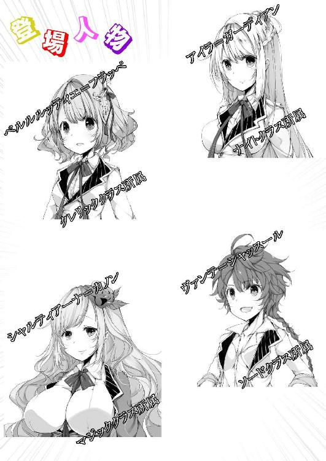

| 最強無敵の？落第候補生達2 (GL文庫) | |
| 百鬼コウ | |
| 愛中出版株式会社 ＧＬ文庫編集部 (2018) | |

洞窟の中で初めて迎えた夜は、なかなか眠りにつく事が出来なかった。
自分の展開したマジックシールドに自信はあるし、加熱魔法のおかげで凍えるという事もない。
それなのに、アイラは酷く心が落ち着かないでいた。
洞窟の中はシンと静まりかえり、時折蝙蝠の羽ばたく音が聞こえてくるくらいだ。
洞窟の入り口の方ではヴァンテが壁に寄りかかった状態で見張りを続けている。今のところ異常らしい異常は何も無い。
アイラの見張り番は一番最後なのだから、しばらく寝ていた方がいいのだが、どうにもその気になれず、仕方なく体を起こして加熱魔法で暖めてある岩の近くに座り込んだ。
すると、その気配で起きたのか、ベルルルッティエが目をこすりながらもぞもぞとアイラの方へ近寄ってきた。
「アイラさんどうかしましたか？」
「何でも無いわ。少し気が高ぶっているのか、寝付きが悪いだけよ。ベルの交代の時間まではまだあるから、もう少し寝ていた方がいいわ」
「はい」
ベルルルッティエがアイラの傍に座って目を閉じたので、アイラは自分の膝の上にベルルルッティエを寝かせてやる。
「――んぅ」
すると、すぐにベルルルッティエは気持ちよさそうに寝息を立て始めた。
「可愛い」
小声で呟きながら、アイラはベルルルッティエの頭を優しく撫でる。
ベルルルッティエを見ていると、アイラは庇護欲が湧いて出てくるのを感じずにはいられなかった。
今まで、ナイトクラスの我の強い女子ばかり相手にしていたのでなおさらだ。
弱い存在の者を護る。それがガーディアン家の理である。
アイラはそっとベルルルッティエの手を握る。それだけでなんだか体の中が暖かくなってくる気がした。
ベルルルッティエの不思議な力は、何度見てもアイラの理解を超える。
魔術式を刻印したこともなく、もちろんトリガーを口にせず魔法を......魔法と呼んでいいのかすらさだかではないが、発動するのだ。
この追試験が終わったら、ベルルルッティエを正式にガーディアン家に招いて、この力がなんなのか解明してあげよう。
アイラは、この短い時間の中で、すっかりベルルルッティエの事が気に入ってしまったようで、まるで家族のように――そう同級生ではあるが、妹のように可愛いと思うようになっていたのだ。
しばらくの間、アイラはベルルルッティエの寝顔を堪能しながら、物思いにふけっていた。
やがて出入り口で見張りをしていたヴァンテが大きく伸びをしながらアイラの方へやってきた。
「そろそろ交代の時間だから、ベルを起こして欲しいんだけど」
「そうね。ベル起きて。申し訳ないけれど、見張りの交代をお願い」
「ふぁい......わかりました......」
眠そうに目をこすりながら、ベルが体を起こす。
「少しでも異変を感じたら、大したことないかも、なんて考えずに、すぐに大声を上げなさいね」
「はい。大丈夫です」
アイラはベルの衣服の乱れを整えてあげてから、見張りへと送り出す。
「この辺りには魔物の気配がないし、大丈夫でしょ」
ベルと入れ替わるようにして、ヴァンテがアイラの向かいに腰を下ろした。
「あら、すぐに寝なくていいの？」
「まあ、あたしは後は朝まで寝るだけだから少しくらいは大丈夫。アイラとも少し話しておきたかったしね」
「あら、そう」
アイラはヴァンテに水の入ったコップを差し出す。ヴァンテはそれを受け取り、加熱魔法で暖められている岩の上に置いて、アイラと視線を合わせた。
「アイラは自分の問題が何かって言うのはもうわかってるの？ この中でそれがわかってないのって、アイラだけじゃない？」
「もしかして心配してくれているの？」
「まさか。学年主席様の心配できるほど出来た人間じゃぁないよ」
「あら、そう」
ヴァンテは頭の後ろで手を組んで欠伸をする。
この追試験には、第十区画にある試験クリアーの証を取って来るという事の他に、各自が抱えている問題の改善策を見つける事が課せられている。
ヴァンテは巨剣を作り出すことしか出来ず、シャルティアーナは二つの魔法しか使えない。ベルは殴ることでしか相手を回復させることが出来ない。それがいわば問題点だろう。
「実を言うと、それに関しては何も心配していないの」
「じゃあ問題がわかったんだ」
「いいえ」
アイラは首を振る。
そして、自信満々な笑みを浮かべながら言い放つ。
「さっきようやくわかったのだけど、私には別に問題なんて無いのよ」
「はあ？」
ヴァンテは顔をひそめた。
「よく考えればわかると思うのだけど、問題がハッキリしているのって貴女たち三人だけよね。そして、その三人だけではこの課題をクリアーするのは不可能だわ。まあヴァンテは一人なら行けなくもないのかもしれないけど。だから、先生は貴女たちがなんとかクリアー出来るようにと、慈悲の心でもって私をリーダーとして同行させることにしたのよ。そうすればきっとクリアーできるでしょうとね」
「ええ......」
ヴァンテはこれでもかというくらいに疑いの声を出す。
「あら、何か異論でもある？」
「いや、さすがに無理があるでしょう。それだったらわざわざ卒業試験不合格なんてさせずに、特別にアイラを護衛に付けるとかにすればいいだけじゃん」
「それにも理由があると思うのよ。わざと私を苦境に立たせてどう行動するか計っているんだわ。それ次第で、聖騎士隊に入ったときに待遇が変わるとかじゃないかしら」
「いやいやいや、それは御目出度すぎでしょう」
「なら、ヴァンテは私の問題とやらが何かわかるっていうの？」
遺憾だと、アイラは眉を吊り上げる。
「うーん、そういう独りよがりな性格なんじゃないの？ もっと協調性を身につけろーとか」
「私に協調性がないって言うの？ こうしてリーダーとして貴女たちを導いてあげているというのに。そもそもそんな個人の性格で卒業試験を落とすだなんて聞いたことがないわ」
「それはそうだけどさ......」
ヴァンテもさすがに今のは無理があったと認めた。
「だけど何も問題がないっていうことは無いと思うんだけどなぁ」
ようやく暖まってきた水の入ったカップを手に取り、ヴァンテは一気に飲み干す。
「私のことはいいのよ。私はいつだって自分の信じたことをやってきたし、それで正解だったもの。それよりも、ヴァンテはその魔法を書き換えるのよね？」
「ええ、したくないなぁ。だって、一度刻印した術式って、消そうとしても結構残ったままになるんでしょ？」
「そうね。でもそれは仕方ないわ」
術式を刻印するということは、体内に巡らされた魔力の葉脈に編み込んだ術式を刻んでいくということである。一度刻んだ術式は、消そうと思っても容易に消せるものではなく、消すと言うよりは術式を削り取るイメージに近くなる。
それゆえ、術式を消すと葉脈が薄くなり、新しく刻印できる術式の容量が少なくなってしまう弊害があった。
うまく前の術式を消せればいいが、術式を消すという作業は非常に困難を伴い、ともすれば消しきれなかった術式が残ってしまうこともある。そうなると、新たに刻んだ術式に干渉し、魔法が上手く発動しない。おかしな挙動をするということにも繋がってしまう。
だから、術式を刻印するときは慎重に決めなければならないし、若いうちから刻めるだけ刻み込むと言う者はほとんどいないのだ。
アイラも確実に必要になるであろう魔法以外は刻んでおらず、まだまだ容量には余裕がある状態だった。
「いやっ、あたしはこの魔法を変えないよ。これがあたしにとってベストなんだ。成長すれば刻印できる容量が増えることもあるんでしょ？ そうしたら別のを刻印するさ」
「で、先生方にはなんて言うのよ」
「そりゃもちろん、今後この力が不要だと感じたらすぐに書き換えますから、今は見逃して下さいって泣き落としするのさ」
「はあー」
アイラはため息を吐いた。
「まあ、書き換えるつもりがないのなら、それしかないでしょうけど、通じるかしらねぇ」
「アイラもその時は口添えしてよ。アイラの家は魔法の研究かなりやってるみたいじゃない？ アイラの家で術式を消して貰えるようにお願いしておきますから、今は平に平に～って」
「それは......百歩譲っていいけれど、やっぱりあんな大道芸レベルの剣を作り出す必要なんてないと思うのだけど」
今は大規模な戦争など滅多に起こることはない。魔物も、確かにこの洞窟にいるようなのは恐ろしく強いが、それでも人の力で倒せないレベルではないのだ。
ヴァンテの様な、攻城兵器レベルの力など個人で持っていても使い道がないだろうに。
もっと実用的な魔法に書き換えた方がいいと思うのだが――
「まあ、ヴァンテがそれでいいというのなら、私はこれ以上言わないわ。将来ヴァンテがやっぱり書き換えたいって私に泣きついてきたら、その時は力を貸してあげましょう」
「そりゃ助かるよ」
まったくその気はなさそうに言って、ヴァンテは立ち上がる。
「それじゃそろそろ寝るよ」
「ええ、おやすみなさい」
ヴァンテはカップをアイラに返すと、シャルティアーナの隣に行って、寄り添うようにして横たわった。そのままシャルティアーナの胸の顔を埋めながらすやすやと寝てしまう。どうやらシャルティアーナの胸の包容力の虜になってしまったようだ。シャルティアーナは一瞬目を開けたが、まだ交代の時間じゃないとわかったのか、ヴァンテを抱き寄せて再び眠りにつく。
アイラは自分もベルルルッティエの隣で眠りたいと思ったが、今しがたベルルルッティエを見張りに送り出したばかりなのでそれも出来ず、仕方なくその場で体を横たえたのだった。
「アイラさん、交代をお願いしますわ」
アイラはいつの間にか熟睡していたようで、アイラが起こされたときには、ベルルルッティエどころか、すでにシャルティアーナの見張り番も終わったところだった。
「ええ、わかったわ」
すぐに目を覚まして起き上がろうとすると、隣にベルルルッティエが居て驚いた。自分がやろうとしていたことを、ベルルルッティエが逆にしていてくれたことに嬉しくなってしまう。
一度ベルルルッティエの頭を撫でた後、起こさないように気を使いながらアイラは見張りへと向かう。
夜中に襲ってくるような魔物はどうやらいなかったようで、横穴の外に展開していたズィーヴェン・シルトは何も反応していなかった。
アイラは手頃な岩の上に腰を下ろして、見張り番を始める。
すると、さっき起こしてしまったのか、ベルルルッティエがアイラの方へやってきた。
「アイラさん、隣いいですか？」
「ええ、もちろんいいけれど寝ていなくていいの？」
アイラは内心喜びながら、隣に座れるように腰をずらす。
「はい、もう十分休みましたから。わたし睡眠時間は短くても平気なんですよ」
ベルルルッティエは、両腕を可愛らしく内側に曲げて元気ですとアピールしてみせる。
「ならいいけど」
「失礼しますね」
ベルルルッティエはじつに女の子らしい仕草で、ちゃんとスカートを両手で押さえながらアイラの隣に座る。それだけでアイラは自分と女の子という生き物の違いを思い知らされると共に、これが女子力かと感心してしまうのだった。
「アイラさんは無事卒業できたらどうするんですか？」
隣にベルルルッティエがいると、つい昨日の水浴びの時に見た裸のことを思い出してしまうが、それをおくびにも出さずにアイラは応える。
「私は当然聖騎士隊へ入隊するわ。もう志願書は出してしまっているし、卒業と同時に入隊試験を受けて、聖騎士隊に入るはずだったのだけど......」
アイラはため息を吐いて下を見る。
しかし、すぐに思い直してベルルルッティエに向き直った。
「いえ。必ず入るわ。私はやっぱり今でも卒業試験で不合格になったとは思っていないし、必ず卒業できるはずだもの」
「はい。さっきヴァンテさんと話しているのを聞いていましたから」
「そう」
ベルルルッティエはアイラの言葉を信じているのか、ニコニコしている。
「わたしは、もしこの追試験をクリアーできて、アイラさんにお願いしていたとおり、この力が解明できて、もしそれで普通に魔法が使えるようになったら、もう一度学院に入り直すかもしれません」
「そんなことを考えているの？」
「はい。今まで魔法の実習はほとんど出来ていませんでしたから。今後のことを考えれば数年くらい出遅れても、それで聖職者としての道が絶たれることはないと思うんです」
「ベルもちゃんと自分の進むべき道を考えているのね」
アイラはベルルルッティエの腰に手を回して自分の方へ抱き寄せた。
「もちろん私も、ガーディアン家もベルの力を解明するのに全力を尽くすから安心して頂戴」
「はい、期待しちゃいます」
ベルルルッティエも抱き寄せられるままに、アイラに身を寄せる。
ベルルルッティエはこの追試験が始まってから、すっかりアイラの強さに惚れてしまったようで、アイラのことを尊敬の眼差しで見るようになっていた。
ヴァンテもアイラに負けず劣らず強いところを見せたのだが、そちらに強い関心を抱かないのは、ベルルルッティエが聖職者志望で争いごとを好まず、アイラが護りを主体にする戦い方をしているからだった。
二人はそれからとりとめのない雑談をしながら見張りを続ける。
やがてヴァンテが目を覚まし、次いでシャルティアーナも起きてきたので見張りを終わらせ、朝食の準備に取りかかった。
「案外こういうのも悪くないもんだね」
朝食は相変わらず干し芋だったが、それを頬張りながらヴァンテは口元に笑みを浮かべる。
「冒険者みたいだっていうことでしょうか」
シャルティアーナが、暖めたお湯をヴァンテに差し出しながら言葉の意味を推察する。
「まあ、そうだね。そんな感じ。野外実習でキャンプしながらってのは何回かあったけど、ほらそれって周りは全部同じクラスで、剣士ばかりなわけじゃん。だけど、今はみんな違うクラスだから普段とは全然違うじゃん？ 戦い方も、考え方もそれぞれ違うわけで新鮮味に溢れている。そんな全然違う人間が一緒になって一つの目的に向かっている。初めはどうなるかと思ったけど、今は案外悪くないって思ってる。アイラの戦い方なんかはいい刺激になるしね」
ヴァンテはそう言って、渡されたお湯を一気に飲み干す。
「そうですね。あまり他のクラスの方達と一緒になる機会は少ないですもんね。わたしたちクレリッククラスの生徒は皆大人しい子たちばかりですし、野外実習というのも数回程度しかやったことがありません。戦いというのもほとんど経験したことがありませんでしたから、怖い気持ちはありますけど、今とても楽しいです」
王立学院では、基本的に他のクラスと一緒に何かをやるというのは行っていない。それは、王立学院に入るような生徒はプライドが高い者が多く、どうしても自分たちが一番という考え方に偏りがちだからだ。それ故、他のクラスと一緒に実技などしようものなら、剣と魔法のどちらが優れているかだとか、ナイトクラスの貴族は根性がないだの、ソードクラスは野蛮だのの言い争いになる。クレリッククラスは我関せずとなることが多いが、概ね一触即発の事態を招いてしまうのだ。
現在では他国との戦争もほとんどなく、国家の存亡を揺るがすほどの魔物なども居ない為、相互連携はさほど重視されていないという理由もあった。
学院を卒業して、各々の職業に就いたときも、もちろん必要があれば協力し合うが、戦争でも起きない限りはそれぞれ干渉する必要もなかった。
そして、いざ戦争が始まったとしても、今の戦術論では剣士と魔法使いは混成部隊にせず、個別運用が最も効果的とされ、さらには騎士と剣士も役割がまったく異なるので連携を意識する必要もないのだった。
「確かに他のクラスの生徒と交流する機会はなかったから新鮮だし、思っていたほど――言っては悪いけれど、おかしな相手じゃなかったから考えを改めるきっかけにはなったわね。でも、今は追試験の真っ最中で、ここは魔物の棲む洞窟の中なのだから、気を抜いて貰っては困るわ。キャンプ気分でいてはダメよ？」
アイラは腰に手を当てて、ヴァンテとアイラを軽く睨んだ。
「わかってるって」
「ごめんなさい」
鉄喰いを、自分以外の者が倒せたのは嬉しい誤算だった。ベルルルッティエの力にしても、彼女には悪いが普通に魔法で回復されるよりも遙かにその効果は大きく、殴るという行為があるにせよ、大神官クラスと言って差し違いないのだ。
シャルティアーナの力は未知数だが、戦力としては既に申し分ない程揃っている。浮かれたくなる気持ちも当然わかる。
だが、鉄喰いという召魔戦争時代の遺物とも言える伝説の魔物が、第五区画という中途半端な場所に居たのがアイラには気になってしょうがなかった。
あれ以上進めないからそこにいたのか、それともこの先に鉄喰いよりも恐るべき魔物がいたから、あの場所に追いやられていたのか。
もしくはそのどちらでもなく、あの場所で門番のように鎮座していた、と考えられなくもないのだ。
いや、むしろそれが一番あり得るとさえアイラは思っている。
だとすると、この先に鉄喰いが護ろうとする何かがある、もしくは『居る』ということになる。
あまり不安を煽るような事はしたくないのでそれは言わないが、気は引き締めておいてもらわなくてはならない。
「まあまあ、アイラさんもお湯でも飲んで一息ついてください。これからますます大変なことになるかもしれませんので」
シャルティアーナがどうぞと、ほどよく暖められたお湯をアイラに勧める。
「ありがとう」
シャルティアーナは自分がまだ何もしていないのをわかっているからなのか、それとももともと周りに気を配る性格なのだろうか、以外と気の利くところを見せることが多かった。知識も相当なものがあるし、アイラの知らないことも知っている事が多い。それだけでもアイラはシャルティアーナに一目置くようになっていた。おそらくだが貴族の家柄だろうとアイラは思っている。
「朝食が済んだらヴァンテには偵察に出て貰うわけだけど、何か問題はある？」
「いいや。もう体調も絶好調だし、全力で行って全力で戻ってくるさ」
「ならいいけれど、ただ魔物の縄張りを荒らしまくって混乱させないように、なるべく隠密行動でお願いするわね」
「うーん、まあそれはできる限り頑張るよ」
一抹の不安はあるが、偵察によって先のことがわかっているのといないのでは対応にかなりの差が出る。未知の敵とその場で対策を考えながら戦うというのだけは避けたいところだった。
ほどなくして朝食を済ませたアイラ達は、荷物を纏めて出発の準備を始める。
「忘れ物はないわね。下着を置いたままにして、いずれ後輩が同じようにここへ来たときに、先輩達の忘れ物がありました、なんて恥ずかしい届け物をされないようにしてね」
言いながら、アイラが加熱魔法の解除を行う。
「だ、大丈夫です」
慌ててベルルルッティエが自分の荷物を確認して、洗っておいた下着は入っているのを見て安堵する。
全員が横穴から出たのを確認してから、アイラはもう一度中と周りを見廻す。
「そんな何度も確認しなくたって大丈夫だって、なんなら帰りに確認することだってできるんだから」
もうすでに先へ進み始めているヴァンテが呆れたように声を掛けてくる。
「確認は大事よ。別に忘れ物がどうとかじゃなくて、こういうことを習慣にしておくことで、無意識のうちに見落としが減るのよ」
「わかったから、もう先行っちゃっていいかな」
「仕方ないわね」
特に問題なしと判断して、アイラもヴァンテ達の元へ向かおうとする。
ここからはもっと気を引き締めないといけないのに――
そう考えた刹那――
アイラの視界に突然地面が現れた。
（何......かしら、これは......地面？ なぜそんなものが――）
アイラは自分の身に何が起こったのか理解できなかった。歩き出そうとしたのに、足が空を切った？
（足が動かない？）
いやそれだけではない――
（腕も！ これは――まさか――）
アイラは自分の体が何も動かせなくなっていることに気がついた。
それと同時に、自分が地面に倒れているのだとわかり、激しい警鐘が頭の中で鳴り響く。
（これは、毒だわ――）
かろうじて頭だけ動かしてヴァンテ達の方を見ると、ヴァンテもシャルティアーナも倒れていた。
ベルルルッティエだけが無事で、何が起きたのかわからずおろおろしていた。
（まずいわ。毒を出す魔物が傍に居た？ ズィーベン・シルトが反応しないだなんて――ベル、逃げて――）
すでに口は動かず、声を出すことすら出来ない。
ズィーヴェン・シルトもアイラが倒れると同時に消えてしまっていた。制御ができなくなったのだ。
と――、突然女性のくぐもった声がアイラの背後から聞こえた。
「ふむ、一人無事のようだな。あれはクレリックか？ レジストされた？ いや、そんな魔法を使った様子はなかったが、用心の為にあらかじめ展開していたのか」
その声の主は、落ち着いた様子で辺りを観察する。
チンっという音がアイラの頭上で聞こえた。
（剣――いやナイフを抜いた？）
毒を使うということはおそらくアサシンだ。剣は使わず、毒を塗ったナイフを好むことが多いはずだった。
何が目的かはわからない。しかし、確実にアイラ達を狙いに来たのだけは間違いない。
（ベル......逃げて......）
そいつが一歩ベルルルッティエに向かって足を踏み出す。足音はしなかった。
アイラの視界にそいつの足が映る。
音のしないように柔らかな布をあてがった独特の靴。そんな靴を履くのは――
（やはりアサシン）
布ズレの音すら出ないように、肌にぴたりと張り付くような独特の――少しでも体重を軽くする為なのか、面積の少ない衣装を着込み、装備は最小限。
アサシンにしては少々目立つ胸と、引き締まったお尻がアイラの目に映る。
口元から鼻にかけて布で覆い、顔の判別が出来なくしていた。
疑惑は確信に変わったが、それで何ができるわけでもない。
「貴女は――何が目的なんですか？」
気丈にも、ベルルルッティエが一歩アサシンに近づきながら問う。
ベルルルッティエはアイラを殴る為に――もちろん回復させる為に近づこうとしてるのだ。
すぐ近くにいるヴァンテとシャルティアーナを殴って回復させることはできる。しかし、それでヴァンテ達が動き出せば、当然その不可解さにアサシンは別の行動を起こすことになる。一番危険なのは、手近にいるアイラにトドメを刺されて逃げられるということだ。死んでしまった人間をベルルルッティエは治すことができない。
その為にはまずはアイラから治すことが必然。そうベルルルッティエは考えているのだろう。
その考えは正しい。
アイラは怒りに燃えていた。体さえ動けばこんなやつ一瞬で倒してみせるが自信あった。
ベルルルッティエを心配する気持ちと、殴って欲しいという気持ち、その二つがアイラの中でせめぎ合う。
「目的か――」
アサシンはベルルルッティエの言葉に返事をした。
「そうだな、安心させる為に教えてやってもいいか。なに、別に命を奪おうというわけではない。この毒も体を麻痺させる為の物で、命に別状はない」
「そう......ですか」
ベルルルッティエはアサシンの言葉に気を許したりはしていなかった。
むしろ警戒度を上げて、ゆっくりとアイラの元へ近づこうとしていた。
「ん？ 信じていないのかな」
アサシンが感心したように言う。
「こんな酷いことをする人間の言うことを信じるわけがありません」
「確かに、それが賢明だ」
アサシンがナイフを構え、ベルルルッティエに向ける。
「だが、命に別状がないというのは本当だ。もっとも――」
アサシンの目がスッと細くなり、感情が消える。
「今話している間に毒は全身に回り、一生自らの力では動くことが出来なくなっただろうが」
（その為に会話を――）
アサシンの言う通り、もうアイラの体は指一本動かせなくなっていた。
全身の筋肉が弛緩し、下腹部が濡れる感触があった。
「それらなばなおのこと貴女を許せません。毒を使うということは、解毒剤も持っているのですよね。それを渡して貰います」
「ふむ、果たしてそんなものがあったかどうか――」
アサシンが動いた。
「ッ！」
ベルルルッティエも走り出す。
ベルルルッティエは両腕で頭をガードしながら、アサシンの方へ突進していた。
「クレリックならこの程度か」
失望したような声を上げながら、すれ違いざまにアサシンがベルルルッティエの腕を切り裂いた。同時にベルルルッティエが転び、アイラの上に倒れ込む。
「ナイフにも当然毒が塗ってある。二人仲良くそこで眠るといい。ああ、しまったこれでは結局全員ここで死んでしまうことになるのか。私が運ぶのか？ 面倒くさいことを――」
勝利を確信したアサシンがため息を吐く。
しかし、アサシンは知らない――
（アイラさん、ごめんなさい今はこの程度しか回復させられません）
ベルルルッティエがアイラに囁き、アイラの背中に拳を一発撃ち込みながら起き上がる。
「むっ」
それを見たアサシンが驚愕の声を上げる。
「そうか、そういえばレジスト出来るのだったか。それは厄介だな」
再びアサシンが構える。
アイラの体は――わずかに良くなっていた。息苦しさはない。手足もわずかに動かせる。だが、それは瀕死の状態を脱したという程度の物で、未だ声を出すまでには至らなかった。
ベルルルッティエにもう一発撃ち込んで貰えれば――
アイラのその願いは、酷く難しいものだった。
アサシンは即座にベルルルッティエに斬りかかる。
それに対し、ベルルルッティエは再び頭をガードしながら突撃する。
「ちっ、毒が効かないということは、動けなくなるまで切り刻むしかないのか？」
すれ違いざまに、今度は先ほどよりも深くベルルルッティエの手首が切られた――気がした。
ベルルルッティエは手首を押さえながら、よろよろと今度はシャルティアーナの上に倒れ込む。
（あれは、シャルティアーナを回復させたということ？）
力は弱いが、確実にシャルティアーナは今ので少し回復したはずだ。
しかし、全快させるには到底至らない。
何度も今のを繰り返すことはできないだろう。
その間に、ベルルルッティエが斬り刻まれてしまう。
（私がなんとかしなければ――）
わずかに手足を動かすが、それ以上のことができない。
（ベル逃げてっ。貴女の斬られる姿なんて見たくない）
アイラの悲痛な叫びは届かない。
「やれやれ、嫌なことをさせる」
アサシンは負けることなど微塵も考えていない口ぶりだった。
今の攻防で、完全にベルルルッティエの動きは見切ったのだろう。
アサシンが悠然と近づく。
ベルルルッティエは体を起こし、アサシンの方を見もせずに、背を向けて駆けだした。
「逃がさんよ」
アサシンもそれを追う。
（そうよ、逃げて、ベルっ）
「はあっ、はあっ」
必死に走り逃げる先にヴァンテがいる。
ベルルルッティエはヴァンテも回復させるつもりだ。
そこまででいい。多少でも回復してくれれば、いずれ毒が薄れるかもしれない。そうなれば、アイラの回復魔法でなんとかなるかもしれないのだ。
ヴァンテを回復させた後は全力で逃げてしまえばいい。
ベルルルッティエは、今度は倒れたりせず、ヴァンテの背中を踏みつけてさらに駆ける。
「おやおや、仲間を踏みつけて行くなんて酷いクレリックがいたものだ」
アサシンには、今のベルルルッティエの行動の意味がわかっていない。
（それでいいわ。後はひたすら逃げてっ）
しかし、アイラの願いとは裏腹に、洞窟の壁際まで行くと、ベルルルッティエは足を止めてしまった。
（ベルっ？）
「ふうっ」
ベルルルッティエが大きく息を吐き出し振り向いた。
その表情は決意に満ちあふれていた。
（まさか戦うつもりなの？）
無謀だ。ベルルルッティエの体術が優れているとしても、ナイフを持った相手に叶うわけがない。
「鬼ごっこはもうお仕舞いかな」
アサシンが三度構える。
「そう......ですね。お仕舞いにしたいと思います」
ベルルルッティエも構えた。両拳を握りしめ、眼前に持ってくる。
「傷が治っているな。逃げている間に治したか」
アサシンの言うとおり、ベルルルッティエの腕には傷一つ無く、血も流れていなかった。
「クレリックですので」
短く答え、ベルルルッティエがゆっくりと摺り足でアサシンに近づいていく。
「もう一度聞きますけど、どうしてわたしたちにこんな酷いことをしたのか教えていただけませんか」
「それは出来んな。言えば私の命が危うい」
「そう......ですか。それは残念です」
ベルルルッティエの間合いと、アサシンの間合いが重なる。
両者の拳とナイフが届く距離だ。
先に動いたのはアサシンだった。
速く鋭く――
目に見えぬ程の一撃がベルルルッティエの左手めがけて繰り出させる。
それにベルルルッティエはまったく反応できていなかった。
あっさりと、左手を、今度はさらに深く、手首が完全に切り落とされるほどの深さで――
ベルルルッティエの左手が落ちる――
アイラの目の前に、あまりにも残酷な光景が広がるはずだった。
しかし――
「なにっ！」
アサシンの声は心からの叫びだった。
切り落としたはずのベルルルッティエの腕はなんともなっておらず、傷もついていなければ、血も出ていないのだ。
「どうか......されましたか」
軽蔑するような瞳で、ベルルルッティエはアサシンを睨んだ。
「回復魔法？ いや馬鹿な。そんな代物を使った気配はなかった」
再びアサシンのナイフが煌めく。
腕、肩、そして脇腹をかすめるように――
しかし、その斬られた場所すべてが何事もなかったかのように、先ほどと同じように血すら出ていなかったのだ。
ただ服だけに斬られた跡があるのみ。
「その程度ですか？」
ベルルルッティエが拳を繰り出す。
それをアサシンは大きくバックステップをして躱した。
「どういうことだ。毒も効かず、切り傷すら付かないだと？ ならこれはどうだっ」
アサシンがナイフをベルルルッティエに向かって投げる。
狙いは違わず、ナイフはベルルルッティエの腕に刺さった。
それを、ベルルルッティエは何事もなかったかのように抜き、後方へ投げ捨てた。
やはり腕には傷一つ無い。
「ばかなっ、竜すら死に至らしめる毒が塗ってあるのだぞ。学生風情がレジストできる代物ではないぞ」
「それだけですか？」
ベルルルッティエが近づこうとすると、アサシンが大きく引いた。
「ちっ、不気味なやつめ」
そのまま走り、第五区画の方へ向かう。
完全にベルルルッティエと距離を取ったところで、アサシンが振り返った。
「まあいい、そこに倒れているやつを運んで貰わなくてはならんしな。三人もやれれば十分だろう。そうだ、一つ良いことを教えてやろう。一度体内に入った毒は魔法では治せん。そのように調整してあるからな。解毒剤のみによって解毒される。そして、私は二度とお前の前には現れないだろう。わかるな、解毒剤が手に入る機会は永遠に失われるというわけだ」
まるで負け惜しみのように言い捨て、アサシンは姿を消した。
勝てない相手とは戦わない。ある意味プロといえる潔さだった。
しばらくは――アサシンが本当に消えたかわからないので、ベルルルッティエはその場を動かなかった。アイラ達はベルルルッティエに一度殴られたことで毒による苦しみはなくなっていたし、今では微かに声も出せるようになっていた。
「ベル......」
アイラが声を出せるようになると、ようやくベルルルッティエは動いた。
「アイラさん大丈夫ですかっ。もうあの人はいないと思うのですが......」
「そ、そうね。あいつはプロだったわ。わざわざここに留まって再び姿を見せるような馬鹿な真似はしないでしょう」
「わかりました。今治しますね」
ベルルルッティエは、この毒すら簡単に治せる口調であった。そして、その通りアイラの背中に力強い一撃を加えると、アイラの体は、毒を受けたことなど微塵も感じさせないほどに、完全に直ってしまったのだ。
「相変わらず凄いわね」
アイラは立ち上がり、自分の体をじっくりと動かして、後遺症が残っていないことを確認する。
あのアサシンは魔法では解毒出来ないようにしてあると言っていた。
それは、おそらく魔法で改良を加え、肉体のみならず、魔術刻印のように、精神にも刻み込み、毒が回るようにしてあるのだろう。
ベルルルッティエの力はそれを遙かに上回っているというわけだ。
「ベル、ありがとう。貴女がいなければ、今頃私たちはいずれ魔物の餌にでもなっていたところだわ」
「いえ、そんな。わたしの力がお役に立ててなによりです」
「だけどね――」
アイラはベルルルッティエの肩を力一杯掴んだ。
「ア、アイラさん？」
その意味がわからず、ベルルルッティエは不安げな瞳でアイラを見上げる。
毒を治して貰ったベルルルッティエに感謝している。感謝しても仕切れないくらいだ。だけど――
アイラはベルルルッティエを睨み、心の底から叫んだ。
「どうしてあんな危ないことをしたのっ！ ベルは自分に傷すら一瞬で治せるのねっ？ でもだからって、自分の体で刃を受けるような真似をしてどうするのっ！ そんなことを貴女の信じる神様はお許しになるのっ？ もし、貴女の力すら上回っていた相手だったらどうするのっ！ 貴女が斬られたとき、私の心は張り裂けそうになったわ。ガーディアン家の長女として、貴女を護ると誓った私の決意は粉々に砕け散ったわ。私が――どんなことをしてでも護ってあげなければならなかったのに」
アイラは膝をついて涙した。
こんなにも情けない気持ちにさせられたのは生まれて初めてのことだった。
どんなときでも、自分が決意したことをやり遂げてきたし、誰にも負けたことがなかった。
「ア、アイラさん」
ベルルルッティエはどうしていいかわからず、それ以上の言葉が出てこなかった。
「ベル、貴女は痛みを感じないの？ 傷も一瞬で治ってしまうのね？」
「そう......です。痛みを感じないわけではないのですが、斬られたときも、少しちくりとした程度で、痛みを感じる間もなく治ってしまうんです」
「そう......それは凄いことだわ。ベルが痛みを我慢していたのではないのなら、少しだけ心が軽くなったわ」
「そうですよ。わたしは平気ですから、そんなに心配を――」
「ベル、私は今から貴女を叩くわ」
唐突に、アイラは告げる。
「えっ？」
「貴女のしたことを私は許すことができない。そして、今貴女は自分のやった行いを何も悔いていない。それはとてもいけないことだわ。今ここでその考えを改めさせなければ、いつかそのせいでベルは命を落としてしまうかもしれない。だから、私はベルを叩くわ。痛みを知りなさい、ベル。その体に痛みを感じさせるのは無理かもしれないけれど、私のことを少しでも想っていてくれるのなら、きっと、私の気持ちも届くはず。それで痛みを感じて欲しい。私の気持ちを感じ取って――」
アイラはベルの瞳を正面から見つめた。その瞳はあまりにも悲しげで、それを見ているだけでベルルルッティエの心は締め付けられるようだった。
「わかりました。叩いて下さい。アイラさんの想いをわたしも感じてみたい」
ベルルルッティエは目を閉じて、そっと左の頬を差し出した。
「ベル、私は貴女のことが好きだわ」
容赦なく、全力でアイラはベルルルッティエの頬を平手打ちにした。
洞窟内に、乾いた音が鳴り響く。
「もう片方の頬も出しなさい」
「はい」
ベルルルッティエは右の頬を差し出す。
「ごめんなさい、ベル。護ってあげられなくて、ごめんなさい――」
さらに大きな音が洞窟内に響いた。
両の頬を叩かれても、ベルルルッティエの頬は赤く腫れたりしていなかった。
しかし――
ツーっと、ベルルルッティエの頬を涙が伝った。
ベルルルッティエが目を開けてアイラを見つめる。
「アイラさん痛いです。ここが――心臓の辺りが、とても苦しくて痛いんです。締め付けられるんです。こんなにも痛いと感じたのは初めてです」
「ベルっ」
「アイラさんっ」
二人は抱きしめ合い、その場に崩れ落ちた。
「ごめんなさい。痛かったでしょう」
「はい、痛かったです。でも、とても嬉しいんです」
「もうあんな危険な真似はしてはダメよ」
「はい。もう二度と、自らの肉体を盾にして傷つけるような真似はしません」
「ベル......」
「アイラさん......」
二人は見つめ合い。自然に――吸い寄せられるようにして、お互いの顔が近づいていく。
そのままキスをするかと思われたが――
「あの、いちゃつくのはいいんだけど、そろそろあたし達も治して欲しいなぁと思ったり。下半身が大変なことになっているので一刻も早くだね――」
「そうですわね。もう一度洗濯と水浴びをしないといけませんわね」
ヴァンテとシャルティアーナが、自分たちの現状を恥ずかしげも無く伝えてくる。
筋肉が弛緩していたので仕方ないのだが、ヴァンテとシャルティアーナの股間部分には――何のものかは説明しないが、水でも掛けられたかのような染みが広がっており、それはアイラも同じだったのだ。
「きゃああ、ごめんなさい。今すぐに治しますので！」
慌ててベルルルッティエは立ち上がり、ヴァンテとシャルティアーナに全力で拳を振り下ろしたのだった。
「あの、わたしにアイラさんのを洗わせて下さい」
アイラとヴァンテ、シャルティアーナの三人は、先へ向かう前に再び水浴びをしようとしていた。
余裕があるわけではないが、どうしてもしなければいけなかったのだ。
「あ、洗うって、ど、どこを？」
アイラがビックリして問い返す。
「あっ、違います。下着です。水浴びしている間に洗っておきますので」
ベルルルッティエは自分の発言の意図がどう解釈されたか考え、慌てて否定する。
「それは嬉しいのだけど、さすがに恥ずかしいわ......」
アイラは脱いだ下着を握りしめる。
「お願いしますっ。わたし、アイラさんのお役に立ちたいんです」
「いや、でもね。その......汚いからね......」
「汚くなんてありません。わたしに洗わせて下さい」
「ッ―――！」
ベルルルッティエは引こうとしない。どころか、アイラが手にしている下着にすでに手を掛けて奪うつもりですらいる。
「もうっわかったわよっ。ベルにお願いするわっ。でも変なことをしてはダメよ？」
一体自分は何を言っているのだろうと思わずにはいられなかったが、忠告だけはしておかないとダメだと思ったのだ。
「はい、大丈夫です。綺麗にしておきますので。......うっふふっ」
ベルルルッティエは受け取ったアイラの下着に、愛おしそうに頬ずりしながら少し離れた場所に移動する。
「だ、だから、そういうことをしてはダメだと言ったでしょう」
「はーい、わかってまーす」
ベルルルッティエは気にした様子もなく、愛おしそうにもう一度頬ずりした後、洗濯を始める。
「うぅ、なんだかベルが変わってしまった気がするわ」
アイラは落ち込みながらも体に水の中に入り、汚れた部分を綺麗にしていく。
「ベルのおかげで助かったけど、一体あいつはなんだったんだい。あたしたちを狙ってきたみたいだけど」
ヴァンテが滝を直接体に浴びながら、独り言のように呟く。
「そうですわね。誰かに雇われたような口ぶりでしたけど」
シャルティアーナがヴァンテの背後から抱きつき、一緒に滝の水を浴び始める。
少し抱きしめる腕に力が入っているように見えるのは、怖かったからだろうか。
「さっぱりわからないわ。命までは奪わないって言っていたから、ものすごく恨みを買っている、ということではないのかもしれないけれど――」
アイラは眉をひそめてアサシンの去って行った方を見つめる。
そこに、もはやアサシンの気配はない。
しかし、再び現れる可能性もゼロではないので、今はアイラがこれでもかというくらい警戒の為に魔法の盾を展開していた。
「私たちがここへいることを知っているのは学院の生徒くらいだから、その中の誰かが卒業のお礼参りにってことかもしれないわね」
アイラが憮然として呟く。
「それちょっと物騒すぎない？」
ヴァンテがシャルティアーナをあやすようにして抱きしめながら、一緒に滝から離れる。
「卒業の時に恨みを纏めて晴らす、なんてことをする人間はたまにいるらしいけど、アサシンを雇うとまでなると異常ね。そんなことが出来るのは、それ相応の家柄とコネがないと無理だわ」
「なら、ナイトクラスの生徒？ だとしたらアイラを狙ったって事？」
「それはわからないけれど、確かに恨みを買うようなことは何度もあったかもしれないわね」
アイラは自分の記憶を思い出してみる。
「例えば、入学式の日に、私に突っかかってきたカディアス侯爵の娘を叩きのめしたことがあったわね。あの後顔を思いっきり歪ませながら睨まれたわ。他にも誰がクラスのリーダーに相応しいか決める為にアントシア伯の娘を決闘で完膚なきまでに叩きのめしたこともあったし、まあ実践形式の授業では誰かしら貴族の娘は叩きのめしていたわね。ああ、でもこれが一番恨みを買ったかしら。ミーナ姫が視察に来たときに、姫に憧れていたオルネットを、姫の面前で泣かせてしまったことがあったわね。他には......」
「わかったわかった」
ヴァンテがため息を付く。
「アイラがナイトクラスでどういう生活していたかはわかったから。誰かに狙われてもおかしくないってことね」
「そうねぇ。私もガーディアン家の長女として手を抜くわけにはいかなかったし、それにすべてちゃんとした決闘や試合だったのだから、文句を言われる筋合いもないのだけど」
「でも、それならアイラさんだけを狙えば良かったのに、いくら毒が効いていなかったとはいえ、ベルルルッティエさんまで襲われたのは不可解ですわね」
シャルティアーナは洗った下着を絞ってそのまま履いていた。替えがないのでこうするしかないのだ。
「でも、全員が狙われる理由なんてまったく思いつかないわ」
アイラも水浴びを終え、こちらは昨日洗っておいた下着に履き替える。
「アイラさん、洗っておきました」
嬉しそうに、ベルルルッティエが下着を両手で掲げながらアイラの元へ戻ってきた。
「ベル......それは見せびらかさなくていいからね」
そっとベルルルッティエの手から下着を受け取り、鞄の中へとしまう。
「結局狙われた理由はわからないってことか」
ヴァンテも生乾きのままの下着を身につけ、準備を整える。
「そうね。残念だけれどアサシンを仕向けてきた相手を特定するには情報が少なすぎるわ」
「それで、これからどう致しますか？」
「そうね......」
シャルティアーナの問いに、アイラは考え込む。
このまま進むのか、それとも不測の事態が発生したということで引き返すのか、その決断をしなければならない。
「......進むわ」
ややって、アイラは決断した。
「今戻るということは、アサシンを追いかけるということにもなってしまう。気がつかれて追いかけてきたと思われたら、反撃してくるかもしれない。もう一度戦うのはリスクが高いわ。時間を置くという意味でも、先へ進む方がいいと思う。もちろん――」
アイラは拳を握りしめ、牙を剥いた。
「あのアサシンは必ずその正体を突き止めて、それ相応の報いを与えてあげるわ。ガーディアン家を敵に回したらどうなるか教えてあげないとね」
アイラは怒りに燃えていた。
あのような屈辱を味あわされて黙っているような性格ではないのだ。
「おお怖い」
ヴァンテがわざとらしく震えてみせる。
「それじゃあ、予定通りあたしは偵察にいけばいいのかな」
「そうね。これ以上アサシンがいて、先回りされている、なんてことはないと思うけれど、とにかく用心してね」
「毒には参ったけど、多分大丈夫。いざとなったら後からベルになんとかしてもらえるしね」
「はいっ、任せて下さい。毒なんて卑怯者の使う手段です。神は卑怯な行いには厳罰をもって応えますっ。必ずやあの方には神罰が下ることでしょう」
ベルルルッティエの信仰する神は、戦うことを否定していない。しかし、闇討ちをするような行いは、戦いを冒涜する行為とされている。アサシンとしては当然の戦い方だが、それを許容するものは少ないだろう。
「それならあたしは早速出発するよ。行って戻ってだから、第八区画の終わり辺りで合流できるといいね」
「そうね、くれぐれも無理はしないように。あと、光が無いと困るでしょう」
アイラが詠唱を始める。
「我が呼び声に応えよリヒト。――我灯すは宇宙より降り注ぎし永遠の光。其は我が友と共に歩むだろう――シュテルネンリヒトッ！」
新たに光が生まれ、それはアイラの手によって誘導され、ヴァンテの頭上で輝き始める。
「もし、光がない方がいい場合は手で覆ってしまってちょうだいね」
「おっけー」
ヴァンテは光をちょんとつついて、自分から離れないことを確認してみる。
アイラは当然のことのようにやってのけたが、実は他人に光を受け渡すということは、非常に高度な術式が必要になる。これはズィーベン・シルトの応用で、他人の殺気ではなく、その本人が持っている固有の魔力による波動を感知して、それを追跡するようにしてあるのだ。
「よし、じゃあ行ってくるね」
そう言って、ヴァンテは駆けだしていく。
少し遅れてシュテルネンリヒトの光も追随していった。
「それじゃあ、私たちも行きましょう」
残ったアイラ達三人もこちらは幾分警戒を増しながら、第七区画を目指したのだった。
第七区画は、水と水晶に彩られた不思議な空間が広がっていた。
道は狭く、足下を川のようになった水が足早に流れていく。
ごつごつとした乳白色の岩肌から、青や紫に彩られた水晶が所々で生えており、美しくはあるが油断をすれば頭を打ったり、ひっかき傷を作ってしまいそうであった。
曲がりくねった道が続き、魔物が出るような気配はないが、進むのには非常に気を使うものがある。
「この水晶は魔力を溜め込んでいるようですわね」
シャルティアーナが、胸の高さに生えている紫色の水晶を触って呟く。
「そうみたいね。ここらは魔力素子もかなり濃厚みたいで、私の魔力も減るどころか回復している感じだわ」
アイラも壁に生えている水晶に触れてみる。
すると青紫だった水晶は、アイラの魔力に刺激されたのか、赤、青、紫、橙、といった感じでめまぐるしく色を変えていく。
「面白いわね。研究用に少し持ち帰りたいところね」
「そうですわね。加工してペンダントにでもしておけば、携帯型の魔力補充アイテムに出来るかもしれません」
「それは便利そうね。うまく行くようなら学院に採掘許可を貰いたいわね」
そう言ってアイラは小さめの水晶を一本折ってみる。
すると、みるみる水晶の輝きは失せ、真っ黒になってしまった。
「あら、魔力が漏れ出してしまったわね」
「根元から掘り出さないといけないみたいですね」
ベルルルッティエが、足下の水縁に生えている水晶を引き抜いてみせる。
すると、水晶の輝きは失われず、ベルルルッティエの魔力に反応してか、真っ白な輝きを放ち始めた。
「うーん、折ってはダメとなると、なかなか難しいわね。あまり根を張っていないのを探さないと......」
「アイラさん、採掘したくなる気持ちはわかりますが、今は先に進みませんと」
「そうね、ちょっと珍しかったからつい気を取られてしまったわ」
シャルティアーナに注意され、アイラはバツが悪そうに折ってしまった水晶を柔らかそうな場所に埋め込む。途端にその水晶に輝きが戻り始めた。
「不思議な水晶ね、私の知っている鉱石のどれとも違うようだわ」
「これも置いていった方がいいですね」
アイラの埋め込んだ水晶の隣に、ベルルルッティエが引き抜いた水晶を置く。
「そうね、帰りに持って帰ればいいわ」
「はい」
名残惜しそうにしながらも、アイラ達は先へ進み始める。
第七区画は、道は悪いが行程は順調であった。
どうやらこの辺りは魔物にとっても生物にとっても住みにくい場所のようで、アイラ達はまったくそれらしい影に遭遇することはなかった。
ただひたすらに歩きにくい道と、足下を流れる冷たい水、そして岩肌と、そこから生えている水晶に気をつけながら進むのみであった。
第七区画の終わりにさしかかると、先の方がまばゆい光で溢れていた。
「あら、外へ出るのかしら」
それは魔法で作り出されたような光ではなく、どうも太陽の光であるように感じられた。
アイラの言うとおり、第七区画を抜けると空間が開け、空を仰ぎ見ると、ぽっかりと円形状に天井がなくなっていたのだ。
「洞窟の中の庭園みたいな感じですね」
ベルルルッティエが久しぶりの太陽の光に目を細める。
ベルルルッティエの言うとおり、そこはまさに庭園であった。
太陽の光があることで植物が育ち、小さな名も無き花や、見たことのない実を付けている木がそこかしらに見受けられる。
「これは、貰った地図とはだいぶ違うわね」
アイラ達がもらった地図では、第八区画はただの巨大な空間となっていたはずだ。天井が開いていたり、植物が生えているといった描写な何もなかった。
「おそらくは、何時かはわかりませんが、天井が崩れ落ちてしまったのでしょう」
シャルティアーナが植物の影に隠れる岩の塊を指さしてみせる。
よく見ればそれと同じような岩がそこかしらにあり、確かに鍾乳石とは全く違う岩質で、地面に半ば埋まっている物もあることから、上から落ちてきたといった方が良さそうな感じであった。
「このことは先生方も知らないということね」
この情報だけでもかなりの価値があり、それを報告するだけでも追試験が合格になっても良さそうだとアイラは思う。しかしそれと同時に、そんな長い間誰も来ていないような場所へ生徒を行かせるのはどうなんだと心の中で悪態を吐かずにはいられなかった。
「それにしても――」
アイラは眉をひそめる。
「岩の他に白い物があると思ったら、あれ全部骨ね」
初めは気がつかなかったが、植物の影に隠れているのは岩だけではなかった。おびただしい数の骨が散乱していたのだ。
「そのようですね。どうも鳥の骨が多そうな感じですけど」
ベルルルッティエが、近くにある骨の塊に祈りを捧げる。
「ここが鳥たちの墓場なのでしょうか」
シャルティアーナが羽根の骨と思われる物をつまみ上げる。
しかし、アイラはまったく別の物も見つけていた。
「よく見なさい、鳥以外のものも結構あるわよ」
アイラの見つけたそれは、明らかに鳥の骨格ではなく、頭蓋骨が人の半分ほどはありそうだったのだ。
「なんでしょうか？ それは」
シャルティアーナがアイラの視線の向けた先の物に気がつく。
「多分魔物の骨だとは思うのだけれど、まあ魔物だってそりゃ死ぬでしょうし、骨だって残るでしょうけど......それにしては――」
アイラは二人に首の骨を見るように促す。
「これは......」
「何者かに攻撃されたような跡でしょうか」
アイラの指したその骨は、明らかにその部位のみを潰され、砕かれているように見えた。よく見れば、どの骨も、鳥などは全身を砕かれている場合が多かったが、急所を狙われて殺された跡のように見えたのだ。
「動物がしてやったにしては魔物も殺されているし、剣や魔法でやられているのとも違う。やったとしたら同じ魔物でしょうね」
「だとしたら、その魔物はどこにいるのでしょうか」
ベルルルッティエが慎重に辺りを見廻す。
太陽の光が差し込み、緑に溢れ、食べ物もある。さらには綺麗な水も流れていて人もまったく来ない場所。魔物にとっても、動物にとっても楽園とも言える場所だというのに、生きて動いている姿がまったく見えないのだ。
鳥は――ほんの数羽だけいることはいるが、この楽園の規模を考えれば明らかに少ない。
アイラの足下にある、魔物の骨と同等の種族がまったくいないのだ。
これでは死の楽園である。
「もうすでに滅びた、と考えていいのかしら」
自分で言っていて腑に落ちないと、アイラの表情は告げていた。
「何にせよ、戦闘がないのは楽でいいのではないでしょうか」
シャルティアーナの言う通り、楽が出来るのはいいのだが――
「そうね、先へ進みましょう。敵がいないのであればヴァンテもかなり先まで行っているでしょうね。予定通り、第八区画の終わり辺りで合流出来るかしら」
アイラ達は川沿いに第九区画を目指して進む。
この区間のことをもう少し調べてみたかったが、底知れぬ不気味さがあり、あまり川沿いを外れ奥へ行ってしまうと、何か良くないことが起きる気がしたのだ。
それでなくても骨ばかりが転がっている所に足を踏み入れようなどとは思わなかったが。
気持ちの良い風が吹き、時折聞こえる鳥の鳴き声に耳を澄ます。
草木の中に転がる骨さえ見なければ、ピクニック気分といってもいい。
いつの間にか太陽が真上に来ていた。
「太陽が見えると時間がわかっていいわね」
アイラは眩しそうに手で光を遮りながら空を見上げた。
「昼食を摂りますか？」
「そうね......ヴァンテと合流してからにしましょう」
さすがに危険な偵察に出てくれたヴァンテを差し置くのは気が引ける。
ベルルルッティエにそう答えてアイラは先を見る。
第九区画の入り口ともいえる場所はもう見えている。まだしばらくかかるだろうが、ゆるい崖を登った先にぽっかりと再び洞窟の入り口が開けていた。
「まあ、摂るなら第八区画で摂った方がいいわね。魔物に邪魔されるということもなさそうだし――」
「アイラさん」
突然、シャルティアーナが鋭い声をあげた。
「何かあった？」
「草が、不自然に倒れています」
シャルティアーナの指す方を見ると、確かに草が一部だけ何者かに踏みつぶされたかのようになっていたのだ。
「確かに......」
アイラが気乗りしない表情で、倒れている草の方へ分け入っていく。
生い茂る草の中にぽっかりとできた穴。
それは、アイラが両腕を広げた幅とちょうど同じくらいであった。そしてなにより――
「これは足跡だわっ」
アイラは眉をひそめる。
前に三本、後ろに一本、長くの伸びて草を押し倒している部分があったのだ。
しかも、それは一つではなかった。
「第九区画に続いているわね」
アイラの言う通り、足跡は等間隔に続いており、よく見ればその巨大な足跡だけではなく、小さな足跡も無数についていたのだ。
「ヴァンテさんを何かが追いかけていったということでしょうか」
シャルティアーナが心配そうに呟く。
「その可能性は高いわ。無事だといいのだけど......」
より一層の警戒をしながら、アイラ達は少し足を速めて第九区画へと向かう。
足跡も一直線で第九区画へと向かっていることから、ほぼ確実にヴァンテを追っているものと思われた。
しばらく歩き、第九区画の入り口へ差しかかった頃、洞窟の奥から雄叫びのようなものが聞こえた。
それは徐々に近づいてくるようであり――
「うぉおおおおおおおっ！」
刹那――ヴァンテが洞窟の奥から必死の表情で駆けてきたのだ。
ヴァンテもアイラ達を見つけたようで、一瞬だけ安堵した表情を見せたが、すぐに表情を引き締め速度をさらに上げてくる。
「逃げろぉおおおっ、やつがくるぞぉおおおおおおおっ！」
「やつ？」
アイラの問いに答える余裕がないのか、ヴァンテはアイラ達の横を駆け抜けざまに、シャルティアーナを抱きかかえてそのまま走り抜けていく。
あのヴァンテがそこまで必死になるなんて――
アイラもベルルルッティエと顔を見合わせ、ヴァンテの後を追う。
その時、アイラの耳に洞窟の奥からドスンドスンと何者かが走ってくる音が聞こえた。
あきらかに超質量の何か。その重音に混じって、カシャカシャカシャという音まで聞こえて来た。
「何かくるっ！」
アイラは振り向きざまに見た。
洞窟の奥から、巨大なあの鉄喰いすらも凌駕するほど巨大な、骨だけになったなにかが走ってくるのを。
太い二本足で巨体を支え前傾姿勢で走ってくる。腕は小さく、背中には羽根の骨格らしきものが付いていた。
あれは巨大な鳥だろうか。
その脇にはさきほどアイラが見つけた魔物の骨と同じ頭蓋骨をした、これまた骨だけの魔物が無数に付いてきていたのだ。
「ヴァンテっ、あれは何っ？」
走りながら、アイラはヴァンテに説明を求める。
「わかんないけど、ここに入ったときはただの骨の塊だったんだけど、近づいたらあーんな形になって周りの奴らと一緒に追いかけてきたんだよ」
「おそらくは竜の骸ではないでしょうか」
抱えられた状態で、シャルティアーナが顔だけを向けて確認する。
「竜？ そんなもの最近じゃ目撃情報すらないでしょ」
アイラが半信半疑の声をあげる。
「ここが巣で、なんらかの理由で死んでアンデット化してしまったのではないでしょうか」
「そんなはた迷惑な」
竜は、強靱な肉体に、これまた強固な鱗を備え、口からは灼熱の炎を吐き出す伝説上の生き物だ。百年近く前まではそこそこの数がいたらしいが、最近では急速に個体数を減らし、目撃情報すらなくなっていた。
召魔戦争以後、人間の武器製造技術、魔法技術の向上で、竜を狩るのが容易になったからと言われているが、その割には竜討伐の報告は少なく、竜鱗などの素材もあまり出回らないことから、単純に休眠期に入ったのでは？ と最近では言われている。
「倒せないのっ？」
「無理っ、再生するから。でも――時間稼ぎはできる」
ヴァンテがシャルティアーナを下ろして、ヴァンテ・シュラークを展開する。
「アイラはそのまま走っていって。シャルも離れて」
そう言ってヴァンテが即座に魔法で巨剣を作り出して構える。
襲いかかってくる骸骨達が間合いに入ると同時に――
「くーーーーーらーーーーーえーーーーーっ！」
ヴァンテは勢いよく、横に払った。
あまりの剣速に突風が巻き起こり、骨も木も草も、ヴァンテの前方にあるもの全てを薙ぎ倒す。
巨大な竜骨の化け物は、真っ二つになると同時に剣風により、バラバラになって崩れ落ちる。無数の小さな骸骨達も、それの巻き添えとなり動かなくなった。
「それで倒したわけではないの？」
「いや全然」
ヴァンテはもう一度剣振り、小さな骸骨達も全て切り払う。
「ふう、これで少しの間は大丈夫」
「少しって？」
「うーん、１００数えるくらい？」
「それだけ？」
バラバラになった骨達が、カタカタと動き始めた。
少しずつ元の形を作ろうと集まり始めだしたのだ。
「いやー、アンデットって苦手なんだよね。斬っても斬っても再生するしキリが無いよ」
「そうだけど」
アイラもアンデットとの戦闘経験が無いわけでは無いが、とにかくアンデットはしつこい。彼らにはすでに命はなく、急所というものが存在しない。この世に未練を持ち彷徨っているか、誰かに仮初めの命を吹き込まれて動いているにすぎないのだ。
アンデットを倒す為には、神聖な力で浄化するか、仮初めの命を消すか、それとも再生できなくなるまですり潰すしかないのだ。
アイラは祝福を受けておらず、神聖魔法を使うことが出来ないのでアンデットと戦うときは常にすり潰してきた。その度合いが足りていないと、やがて復活するから厄介なのだ。
すり潰した後に、祝福を受けた聖水なりを撒けば比較的楽に倒すことは出来るが、残念ながら今その持ち合わせはなかった。
「あんなデカ物をすり潰していかないといけないっていうの？」
アイラは眉をひそめた。そんなことをしていたら何ジゲンあっても足りそうもない。
「そうだわっ、ベルはアンデットとの戦闘経験はある？」
アイラはベルルルッティエに助けを求めた。ベルルルッティエの異常な回復力ならば、アンデットにも効くのではないかと思ったのだ。
「戦ったことはありませんが、やってみます」
ベルルルッティエはヴァンテの足下に転がっている骨に向かって拳を振り下ろした。
パキンっという乾いた音と共に、骨は粉々に砕け散ったが――
「わっ、ダメです。拳を当てたところなら動かなくなりましたが、拳が当たっていない部分は動いてます」
「くっ、肉がないから力が伝わらずに殴ったところだけに効果が出ているのかしら」
残念ながら思ったような成果はでなかった。
そうこうしているうちにも、バラバラになった骨は集まりはじめ、徐々に姿を形成していく。
「ヴァンテ、もう一回剣でバラバラにして頂戴」
すぐには対策を思いつかず、時間稼ぎをするしかなかった。
本当にすり潰していかないといけないのだろうか。
「あのー、よろしければわたくしがなんとかいたしましょうか」
ヴァンテが再び巨大な骸骨をバラバラにし、小さなやつも叩きつぶしていると、シャルティアーナが遠慮がちに声を掛けてきた。
「シャル、出来るの？」
アイラがいぶかしげに尋ねる。
シャルティアーナの魔法は、放出系の攻撃魔法が一つと、それの威力を高めるものが一つだけと聞いている。そのうちの攻撃魔法が、対アンデット用だとでもいうのか。
「一度に全てを再生できないほど粉々にしてしまえばいいのですよね」
「ええ、そうよ」
「なら、なんとかなるかもしれません。ただ、詠唱する為の時間稼ぎと、一度に全てを巻き込まないといけませんので、バラバラになった状態ではなく、ちゃんと形を保った状態のほうがいいですね」
「わかったわ。それは私が請け負いましょう」
アイラはシャルティアーナの提案に乗った。
これだけ迷い無く出来ると言ってのけたのだ。まだ見ぬシャルティアーナの魔法であったが、賭けてみる価値はある。
......ダメだったら時間をかけてアイラがすり潰していけばいいのだ。
「ヴァンテ、貴女はシャルとベルを守ってあげて。もし私の盾をすり抜けていくやつがいたら、叩きつぶしてその骨を全部私の前へ投げて頂戴」
「おっけー」
ヴァンテがヴァンテ・シュラークを解除しボロ剣に持ち替え、シャルティアーナにウィンクしてみせる。
「シャル、期待してるから」
「ええ、お任せくださいな」
シャルティアーナは頷き、魔法の起動に入る。
「我が内に眠る力よ目覚めよ――グリモワール」
刹那――
シャルティアーナの元へ、とてつもない量の魔力素子が集まり始める。
嵐のように風が吹き荒れ、辺りの空間が歪み出すかのような錯覚に囚われる。
「トリガーを起動しただけでこれなの？」
アイラの頬に冷たい汗が流れた。
どんな魔法かはわからない、けれどシャルティアーナがとてつもない魔法を使おうとしている、それだけはわかった。
アイラは気合いを入れてグロース・ヴァントを展開した。
気を抜けば、その魔力すらシャルティアーナに奪われてしまいそうだ。
三六枚の盾は、今度はドーム型ではなく壁状に展開され、魔物とアイラ達との間にそびえ広がる。
そして、骸骨達がついには元の姿に戻った。
「月に狂いし矮小なる者――其は憧れ、其は憎しみ、幾千幾億の時を経て、汝、連綿と続く業火の中に真理を見いだすであろう。永久の瞳に映るその星は、我らが想いを知ることはなく――」
長い。シャルティアーナの使おうとしている魔法は、かなり昔のものだ。
現在は、一つの言葉に多くの意味を詰め込み、なるべく簡略化させる研究が進められている。戦いの中で、魔法詠唱の長さは非常に重要になってくる。短ければ短いほど当然有利になるのだ。
シャルティアーナのように、悠長に長々と詠唱していたらあっという間に攻撃され、やられてしまうだろう。
もし、そんなことが許されるとしたら、優秀な護り手がいる場合のみ。
そう、今のアイラがそれである。
とはいえ――
「これはきついわね」
アイラは苦悶に顔を歪ませていた。
巨大な竜の骸骨は、その巨体に似合わぬほど鋭い攻撃を繰り出してくる。
グロース・ヴァント全ての制御をそちらに回さなければ、一瞬で防壁を突破されそうだった。そして、さらに厄介なのは、竜の取り巻きたちだった。こちらは攻撃は弱いものの、何しろ数が多い。アイラは無茶を承知でズィーヴェン・シルトも同時に展開する。
本来であれば、場の魔力素子が多ければ何ら問題なく維持が出来る。
だが今は場の魔力素子をシャルティアーナが片っ端から集めているのだ。
アイラは自身の魔力のみで同時に二つの防壁を展開していた。ここへ来るまでに完全回復していた魔力が、堰を切ったかのごとく流れ出していくのを感じていた。
「加勢を」
「いらないっ、邪魔よっ」
ヴァンテの申し出を即座に跳ね返す。
今この空間に敵ではないものが紛れ込んだら、それらもまとめて的にしてしまいそうだった。
極限まで集中している今の状態に不純物を混ぜるわけにはいかない。
狂ったような魔物の猛攻をかろうじてアイラは凌いでいく。
その中でアイラは少しばかり喜びを感じていた。
これほどまでに必死になったことは今までに無かった。
どんなときでも常に余裕で相手を倒してきた。
その自分がぎりぎり限界のところで相対しているのだ。
「ちょっと燃えてきたわっ！」
アイラが全ての魔力を使い切る覚悟で全力を出す。
それまでわずかに押されていたのが、逆に押し返し始める。
「ガチャガチャガチャっ！」
竜の骸骨が声なき声で吠えた。
相手も当然全力だ、一度攻撃する度に骨が砕け、その度に再生していく。
それでも尚アイラが押していた。
肉体があれば、また別であっただろう。これだけの巨体だ。その攻撃は恐ろしいほどの威力を持ち、アイラの魔法の盾ですらはじき飛ばしていたかもしれない。
だが、肉のない攻撃に重さはなく、ただ鋭いだけであった。
その間にもシャルティアーナの詠唱は続く。
「――我らに応えることもなく、燦然と輝き、ただ静かに燐光を注ぐだろう」
一節を唱える度に、シャルティアーナから魔力の波動が魔方陣となって放たれていく。
アイラは、恐ろしいほどの魔力の高まりを背中に感じていた。
こんな莫大な魔力を使う魔法――人が人に向けて使うレベルのものではない。
竜......どころか、世界を相手にでもするかのような――
「焦がれし我らの想いは時を超え、恋慕の情は今、狂気へと昇華せり」
ついに、シャルティアーナの詠唱が完了した。
シャルティアーナが両手を突き出す。同時にアイラは全ての盾を敵にぶつけて全力で飛び退いた。
シャルティアーナの両手の先で魔方陣が膨れあがっていく。
それはこの空間全てを飲み込むほどの巨大さになり――
「その無垢なる躰に我らが想いを刻めっ！」
刹那――世界から色と音が消えた。
「ルナティック・イレイザーーーーーーッツ！」
初めは――そう細い糸のようなものが放たれただけだった。それが一瞬で視界の果てまで届いたかと思った瞬間、衝撃波が全方向へ放たれ、次いで耳が壊れそうなほどの轟音と轟爆。
白なのか黒なのか、黄色なのか、光すら吹き飛ばすほどの威力の波動に膨れあがり、音も光もなにもかもを巻き込んで、目の前にあるもの全てを吹き飛ばしていたのだ。
そこに先ほどまであった空間も、魔物もなにもかもなくなっていた。
そう――洞窟であったものすら消し飛んでいたのだ。
「嗚呼っ、快感ですわっ」
シャルティアーナが体をぶるぶると震わせながら、その場に崩れ落ちた。
アイラはしばし呆然としていた。
バチバチと、空間摩擦による放電が至るところで起き、未だに収まっていない。
危険だから動かないわけではない。
ただ動けなかったのだ。あまりのショックで。
シャルティアーナの魔法のせいではなく、洞窟がなくなっていたことで――だ。
「ヴァ、ヴァンテさん、この先の道はどうなっていたかしら？」
アイラがようやく言葉を思い出し、口にした。だが、動揺は抑えきれないようだ。
「うーん、ここからまた屋根のある洞窟に入るじゃん？ そんでまただだっ広い空間がそこにあるんだ。魔物もそれなりにはいたんだけど、とにかく広くてさ。さっきの骸骨達も余裕で入ってこれるくらいのね。そんでしばらくいくと、壁があるんだ。ここの天井付近近くまで登らないといけなさそうな壁がね」
「そ、その壁とやらはここから見えるのかしら？」
「そんなのもう見たまんまじゃん」
ヴァンテが投げやり気味に言う。
「見たまんま？ 私の目には何も見えないのだけれど？」
アイラの目には、ただの更地が広がっているようにしか見えなかった。
気持ちの良い風が、アイラの頬を撫でる。
「だから、何一つない、その見たまんまってことじゃん？」
アイラは天を仰いだ。
何もかも消し飛んでいた。
魔物も洞窟も、何もかも。
「第十区画は残っているのかしら？」
「場所としては残っているんじゃない？ 場所っていうか空間？」
「追試験合格の証は？」
「......」
「......」
「......」
「......」
誰も、何も言えなかった。
第十区画そのものが、もう吹き飛んでいるのだ。
当然そこにあるという証も――
「まあ、とりあえず行ってみるしかないんじゃない？」
ヴァンテが現実的な意見を言う。
「そ、それしかないわよ......ね」
力なくアイラは頷いた。
アイラ達が第十区画――のあったであろう空間に辿り着いたのは、もう日が沈みかけてからの事だった。
進むのに何も障害はなく、普通に歩いていれば日が沈む前に辿り着いていただろうが、一行は、主にアイラの足取りが重く、途中で何度も休憩を挟んだり、洞窟の、足下部分は吹き飛んでいないので、何か貴重な物がないか、証の代わりに持っていくことで卒業を許可して貰えるような物がないか探しながら歩いていたのだ。
「壁は、まあこの辺りにあったかな。ほら、足下に少しだけ段差があるじゃん？ そこから天井付近まで断崖絶壁になってたんだよ」
ヴァンテが今は無きその断崖絶壁を思い浮かべて見上げる。
「見事に何もないわね」
アイラはようやく心の整理がついたのか、落ち着いた声になっていた。
「お褒めにあずかり光栄ですわ」
「何一つ褒めていないわ」
頬を染めるシャルティアーナに、アイラは冷たく告げる。
「はあーっ、そうだわ、思い出した。シャルティアーナのあの魔法って、召魔戦争でも使われることのなかった禁呪系のやつよね」
「そうなりますかねぇ」
「使われることがなかったっていうよりも、使える人間がいなかったっていうほうが正しいでしょうけど。あまりにも膨大な術式の為、それを刻み込めるだけの資質を持った人間がいなくて、術式だけは完成している幻の魔法って言われているのよね。まさかあれを使える人間がいるなんて思わなかったわ」
厳密に言えば、あのルナティック・イレイザーの一種類のみであれば刻み込める人間が数名はいたそうだが、普通の戦争でも持てあましそうな威力な上、術式を後から消そうと思っても、かなりの残骸が残り、新たに刻み込める呪文が相当減ると言われている。
そんなもの誰が好んで使いたいと思うのか。
それをシャルティアーナは刻み込んでいる。さらには威力を上げる術式まで。
「って、さっきのって、威力増幅魔法は使っていないのよね？」
「そうですわね。普通のルナティック・イレイザーですわ」
アイラの頬に冷たい汗が伝った。
ただでさえ一国を消し飛ばしてしまえる威力の魔法なのに、さらに威力を上げてどうしようというのか。
「わたくしの目標はあれですわ」
シャルティアーナが天を指さす。
「あれ？」
そこにはうっすらと白く輝く月が存在していた。
「あの月を破壊することこそが、わたくしの目標であり、この魔法の存在意義なのですわ」
「止めなさいっ、はた迷惑なっ」
アイラは思わずシャルティアーナの胸を手の甲で軽く叩いてしまった。
「でも、この術式を編み出した魔術師は、いずれ月から侵略者が攻めてくると思い、先制攻撃で月を破壊してしまえばいいと、人類の為にこの魔法を生み出したのですわ」
「確かそんな逸話があったかしら？ でも、月を破壊するなんて無理よ。一体どれだけ離れていると思っているのよ」
「あら、すぐ手を伸ばせば届きそうな場所にあるじゃありませんか」
「いや、絶対届かないから」
天文学が発達してきた最近では、月は気の遠くなるほど離れた場所にあることがわかっている。そして、アイラ達のいる星と同じくらいの大きさであることもわかっているのだ。シャルティアーナの魔法がどれほど威力を増そうとも、星一つを破壊するのは不可能である。
「何事も始める前から諦めてはいけませんわ。この魔法も初めは大岩を吹き飛ばす程度の威力しかありませんでした。それを代々改良に改良を重ね、ついにはこの威力になったのです。わたくしもこれを受け継いでからは、さらに改良出来る箇所がないか研究していますので、いつかは月まで届くはずですわ」
「って、それを生み出したのはシャルティアーナの一族なの？」
「はい、そうですわ」
シャルティアーナはあっさりと肯定する。
「月に魅せられ月に狂った一族だって言われているけど？」
「まあ昔の話ですけれど、そうだったみたいですわね」
「ああ、そう。そりゃとんでもない名門一族のお嬢様だったわけね」
ただひたすらに威力のみを追い求め、その過程で様々な攻撃魔法を生み出したとも言われている。現代魔術の基礎を作り出したとされ、その功績は評価されているが、あまりにも危険思想が過ぎるので、表舞台にあげられることはついぞなかったと言われている。
「お願いだからそれを人に向けて撃たないでよね」
「もちろん承知しておりますわ。目的はあくまでも月ですので」
それも止めて欲しいともう一度言おうかと思ったが、どうあがいても月まで届かせることは不可能だと思ったので止めておいた。
「それよりも、追試験の証が残っていないか探さないといけないわね」
アイラは、すでに一足先に第十区画があった空間に足を踏み入れている、ヴァンテとベルルルッティエに声を掛けた。
「どうかしら、何かあった？」
「あるわけないじゃん」
「見事に全部吹き飛んでますぅ」
ヴァンテはもう真面目に探すのも馬鹿らしいと、投げやりな返事で、ベルルルッティエは青い顔をしながら賢明に探し続けていた。
「可能性があるとするならば、シャルティアーナの魔法が当たった瞬間に、上にはじき飛ばされてどこかに落ちているっていうところだけど」
「無理でしょう。綺麗に洞窟の上から下まで吹き飛んでるもん。断崖絶壁をくり抜くレベルで済んでれば瓦礫の山の中から発見、なんてあったかもしれないけどね」
ヴァンテはついに諦めたのか、アイラ達の方へ戻ってきた。
「どうする？ もう戻る？ 第十区画まで来たのは間違いないんだし、それをなんとかして証明すれば許してくれるんじゃない？ 色々と不測の事態のあったことだし」
「そう......ね」
アイラは迷っていた。
ヴァンテの言うとおり、第十区画まで到達したのは間違いないのだ。しかし、それを証明するとなると難しい。第八区画の地図が更新されていなかったところを見ると、教師達はここまで来たことがないのだ。魔法で物を運ぶ程度のことはできても、詳しくどうなっているかは調査したことがないのだろう。そして、アイラ達が洞窟の奥はこうなってましたと言ったところで、確認してくるわ、とはならないに決まっている。
もっと確実に、それを見せれば第十区画まで行ってきたのだと証明できるものがなければ――
「......その為の証なのよね」
「何か言った？」
「いいえ、なんでもないわ」
ヴァンテに答えてアイラは瞳を閉じて天を仰いだ。そして、一つ思い出した。
「この洞窟、第十区画で終わりではないと言っていたわよね」
「まさか、さらに先へ行くつもりですか？」
アイラ達の元へ戻ってきたベルルルッティエが目を見開く。
「断崖絶壁を登って、そこでさらに証を探して、となると体力的に厳しいものがあったかもしれないけれど、その障害がなくなり、魔物もおそらく全部吹き飛んだでしょう。何も障害がないのだから、少し先へ行くことはできるわ。そこで確実に第十区画よりも先へ行ったと言える何かがあれば良し、なかったらとりあえず地図を更新して報告するというのでどうかしら」
「第八区画以降は洞窟そのものがもうありませんって？」
ヴァンテが茶化すように言う。
「そう......ね。竜が全部壊してしまっていたということにすればいいわ。どうせ見に来る人なんていないでしょう」
「そんなんで許してくれるかな」
「許して貰えるように私が交渉するわ。それでみんなはどうかしら。この先へ行くことに賛成か反対か聞きたいわ」
アイラは三人の顔を見る。
「この先と言うと、先生の話では第十区画で登った後に、どこまであるのかわからない穴があるのでしたかしら」
「そうらしいわね。今立っている場所よりもずっと深くまで穴があるのなら、そこは無事でしょう。断崖絶壁の上から降りるよりも距離的にはだいぶ楽が出来るはずよ」
「あたしは賛成かな。ここまで来たらどこまでいけるか試してみたくもあるしね」
ヴァンテは深く考えずに頷いた。
「わたしはアイラさんの決定に従います。アイラさんがいなければここまでこれませんでしたから」
ベルルルッティエはアイラを信頼の瞳で見つめる。
「わたくしも、洞窟を吹き飛ばしてしまった責任がありますから、できる限りのことはさせて頂きますわ。ただ、魔力が回復するまでにかなり時間がかかりますから、今度こそ本当の役立たずになってしまいますけど」
シャルティアーナが遠慮がちに呟く。
「それに関してはいいわ。どのみちあんな魔法を何度も撃たれたら困るし。......じゃあみんな第十区画よりも先へ行くということでいいわね」
アイラが最後の確認と、三人に念を押す。
「おっけー」
「はいっ」
「わかりましたわ」
三者三様の返事を得て、アイラ達はさらに奥を目指す為に、進み始めたのだった。
第十区画のあった場所は、予想していたよりもはるかに長く、普通に歩いても二ジゲンほどかかってしまった。
そこが実際にはどういった場所だったかはもはや確かめようがないが、証を探すだけでもかなり骨の折れる作業になっていただろう。
一行は、ほぼ更地になった洞窟跡を歩き続け、ついにその端とも呼べる場所まで辿り着いていた。
「これがその穴......というよりも奈落ねこれは」
アイラがぞっとしない表情で奈落の底を見つめる。
一体何処まで続いているのか、天井がなくなっているというのに、底まで光が差し込まず暗黒が広がっているのみであった。
試しに石を落としてみたが、跳ね返る音も、砕け散る音も聞こえなかった。
音が届かないほど底が深いのか、それとも何か柔らかい物があるのか......。
「どうしますか？ この深さだと持ってきたロープじゃとても足りませんけど」
ベルルルッティエも穴を覗き込みながら、不安げな声を上げる。
「降りるだけなら出来なくもないわ。私が魔法の盾を作り出すから、それに乗って浮場を掛けながら降下するの」
「おおー、便利じゃん。そんな使い方出来るんだ」
ヴァンテが感心するが、
「言っておくけれど、当然正規の使い方じゃないから、かなり無理をするのだからね」
アイラは苦い顔をした。
魔法の盾は空中に浮いているのだから、乗ることは可能と言えば可能だ。しかし、盾に加重を加えるような使い方は想定していない為、そのままでは当然重みで下がっていく。それに抗うような制御――攻撃で言えば相手に飛んで行くような挙動を加えるのだ。ある程度の勢いは制御できるが、人を乗せた状態でとなると、その加減が難しい。一歩間違えればひっくり返り、全員谷底へ転落ということになってしまう。
浮遊魔法というのもあるにはあるが、こちらも魔力地場を形成し、人間に対して上方向の力をかけ続けるという物である。出力の制御次第では自由に上昇も下降もできるらしいが、人一人浮かせるという行為は、魔力消費が異常なほど高く、また少し制御を誤っただけで地面に叩きつけられたり、あり得ないほど上昇してしまい、その後の立て直しが困難で結局地面に叩きつけられるという事態を招いてしまう。
術式もシャルティアーナのルナティック・イレイザーほどではないにしろ、異様なほど長く、これはほぼ制御に関する術式になるらしいが、あまり実用的とは言えない為、刻み込む人間は少ない。
偵察などには役に立つ場面もあることから、一部の軍属の人間は使えるらしいが、一般人には不必要な物であると言える。
また、さらに浮遊魔法を進化させた飛行魔法となると、数段難易度は上がり、飛行し始めは大出力の魔力放射で飛ぶことはできるが、飛行中の細かい挙動や、これが一番難しいのだが、着陸時の制御が恐ろしく難しい為まともに使える人間がいないというのが現状だ。
一時期飛行魔法の研究が流行った時期があるのだが、飛行中の制御ミスで落下、着陸時の制御ミスで地面に叩きつけられ死亡する、といったことが多発し、肉体一つで飛ぶのはあまりにも危険だということで、最近では単独飛行魔法の研究はかなり下火になっている。
翼のない人間には、感覚的に飛ぶということが理解できないのかもしれない。
「いい？ 乗るときは全員一緒によ」
アイラが巨大な一枚の魔法の盾を作り出し、奈落の上に展開する。
「乗った瞬間から落下が始まると思うから、全員中央に固まってバランスを崩さないように注意して頂戴。私が上方向へ飛んで行くような力を加えるけど、ハッキリ言ってどれだけの力を加えればいいのかわからないから投げ出されないように注意してね」
「もし投げ出されたら？」
「この高さなら即死でしょうね」
「うわー......」
どん引きするヴァンテに、身も蓋もなくアイラは告げる。
「もしそうなったら、ズィーベン・シルトで下から打ち上げまくってお手玉のようにして助けてあげるわ」
「うわー......」
再びヴァンテがどん引きした声を上げる。
「大丈夫です。死んでなければわたしが治して差し上げますから」
「まあ、保険があるってのはいいことだよね」
確かにベルルルッティエがいるからこそ、多少の無茶が出来るというのはあった。
「それじゃあ行くわよ」
四人が肩を抱き合って、崖の縁に立つ。下から強い風が吹き付け、髪をかき乱す。
「この風も役に立ってくれるとは思うけど――」
アイラは自分に言い聞かせるようにして呟く。
「全員同時にね」
アイラが手に力を入れる。
「せーのっ」
同時に四人が飛んだ。
盾の上に着地するとすぐに身を寄せ合う。と同時に、四人を乗せた盾が勢いよく落下を始める。
「アイラっ」
「わかっているわよっ。オーベンっ」
アイラが右手を天にかざしながら叫ぶ。その行為に意味があるのかはわからないが、気分的にそうしたほうがより効果が出ると思ったのだ。
アイラは初め三割程度の出力で力を解放していた。しかし、それではまったく浮力が足りず、落ちる勢いが緩和されなかったので、七割程度まで力を引き上げた。少し落下速度は弱まったが、それでも落ちれば無事に済まない速度のままだったので、ついには全力で力を解放する。
「くっ」
アイラは額に汗をにじませた。
全力でもまともな浮場を得られなかったのだ。
人の体重を、しかも四人分を支え浮かそうというのがこれほどまでに力を要することだとは思ってもみなかった。
そもそも盾に人が乗ることなど想定していないのだから当然だ。
落ちる勢いはなんとか半分ほどにまでなったが、このまま地面に叩きつけられれば無事では済みそうもなかった。
「ヴァンテっ、地面に着く前に私たちを抱えて横へ飛べる？」
アイラは、即座にもっとも被害が少なくなる方法を考えた。
このまま叩きつけられるよりは、横方向へ力を分散した方が良いはずだ。それに、その後のこともアイラの脳裏にはいい案がひらめいていた。
「了解っ」
アイラは力の制御を続けながら、シュテルネン・リヒトを真下に向かって投げつける。これでヴァンテが地面に着く瞬間を判断できるはずだ。
その時、アイラは不意に、何か薄い膜のような物を突っ切った感覚に襲われた。
「アイラさん、今何か結界を抜けました」
それはシャルティアーナも感じたようで、突き抜けた先を見上げたが、目には何も映らなかった。
「何かあるということよね」
「地面が見えたっ」
アイラの呟きとヴァンテの声が重なった。
「飛ぶよっ」
返事を待たず、ヴァンテは三人を抱きかかえ、盾を蹴り、感覚的にはやや斜め上に向かって飛び上がった。
即座にアイラは巨大な盾を解除する。と、同時にズィーベン・シルトを展開し、ヴァンテの飛び上がった方向へ一直線になるようにして並べた。
「ヴァンテっ」
「了解っ」
アイラの狙いをヴァンテは即座に察する。
ヴァンテが空中に現れた銀魔の盾を右足で思い切り踏みつける。すると当然銀魔の盾は反撃し、ヴァンテの体を強烈な勢いで押し返した。
「いけるね、落ちる勢いが弱まった」
ヴァンテは七度それを繰り返し、ついには無事に着地することに成功したのである。
「いやー、あのままだったら地面を転がって傷だらけになるんじゃないかと思ったけど、アイラの機転で助かったよ」
三人を地面に下ろしてヴァンテは息を吐く。
「貴女もなかなか見事だったわ。三人を抱えてあれだけの芸当が出来るのですもの、帰りも同じようにして頼もうかしら」
「ええっ、今落ちてきた分をあれで登るの？ そりゃさすがにきついんじゃない？」
「まあ帰りは帰りで考えがなくはないからいいわ。それよりも、かなり深くまできてしまったし、おまけに結界が張られているなんて、一体ここには何があるのかしら」
アイラがシュテルネン・リヒトの光を最大光量にする。
すると、そこには石畳のような通路と、その通路の両脇には柱がずらりと並べられたいかにも怪しげな空間が広がっていたのだった。
＊＊＊＊
「これは......」
明らかな人工建造物にアイラは眉をひそめた。
石畳にも、柱にも、何か彫刻が施されており、ただの地下洞窟というわけではなさそうだ。その精細から宮殿か祭壇か、そういった特別な場所であることを伺わせる。
「なぜこんなところに......」
「かなり古い造りですわね」
シャルティアーナが石柱に施された模様を指でなぞる。
「おおよそ百年ほど前の貴族達に好まれた、アシンメトリーな――左右同じに見えてわずかにどちらか片方に違いを出す、という模様になっていますわ。最近ではこういった左右非対称の模様は使われていないはずですわ」
シャルティアーナの見識の広さはアイラも舌を巻くほどだ。
「百年前ねぇ」
確かに豪華な造りではあるが、地の底にあるのを差し引いてもいかにも古くさい。歴史的価値はありそうだが――
「そんな古い建物がどうして学院の管理する洞窟の奥にあるのでしょう。学院は知っているのでしょうか」
ベルルルッティエが不安げに呟く。
ベルルルッティエには何か嫌な気配でも感じているのか、アイラにぴたりと張り付いて離れない。
そんなベルルルッティエを安心させるように、アイラは抱き寄せる。
「恐らく知らないのではないかしら。第十区画よりも奥があることはわかっているようだったけれど、調査したことがないような口ぶりだったし。何より、洞窟の奥深くまで魔物を倒しながら来て、さらにこの奈落の底を調査するというのは並大抵のことでは無いわ。奈落の底に何かがあるとわかっているのなら調査団を編成することはあったかもしれないけれど――つまり、私たちがこれを報告すれば初めて本格的な調査が始まるかもしれない、というところではないかしら」
「なら、これって結構な大発見？ 確実に第十区画よりも先へ行ったという証明になるし、あたしたちの卒業もなんとかなりそうじゃない？」
「そうね、柱の破片でも持ち帰れば証明になるかもしれないわね」
ヴァンテに同意して、アイラは地面に落ちている建造物の破片らしき物を拾う。
「確かにあまり見ない模様だし、私たちが嘘をついているとは思われることはなさそうね」
アイラは破片を懐にしまいながら洞窟の奥に目を向ける。
「さて、とりあえずは追試験の証の代わりになる物は手に入れることが出来たけど、ここからどうしましょうね」
言うまでもなく、この謎の通路の奥へ進むか否かということである。
「もちろん行くしかないっしょ」
気軽に言うのはヴァンテだった。その瞳は好奇心に満ち、あわよくばお宝を手に入れることが出来るかもと雄弁に語っている。
「わたくしもこの先がどうなっているのか興味がありますわ。おそらくは古い貴族達の秘密の会合場所か、もっと言うならば、密教のたぐいの神殿があるかもとすら思っていますわ」
シャルティアーナも同様に瞳を輝かせる。もしシャルティアーナの言うように密教の神殿でもあるのなら、現代に伝わっていない秘術の呪文書などがあるかもしれないのだ。おそらくはそれが目当てなのだろう。
「わたしは少し怖いです」
さらにアイラに身を寄せてベルルルッティエは小声で呟く。
「とても嫌な予感がするんです。何か危険があるというわけではなく、ただ良くない物がありそうだという程度の物ですけど」
ぎゅっと、ベルルルッティエはアイラの腕にしがみついた。
「そう、なら奥へ行くのは止めておく？」
「ああ、いえっ、大丈夫です。本当にただ嫌な感じがするというだけで、わたしも奥に何があるのかは興味がありますから」
「そう......。なら奥へ向かうということにしたいけど、何があるかはわからないから、少しでも危険を感じたら即時撤退しましょう」
「オッケー、退路を確保するくらいはできるから任せてよね」
ヴァンテはボロ剣を両手で掲げて見せるが、どうやらそれが残り最後のボロ剣らしかった。あまり期待はできないわねと思いながら、アイラは先頭に立って通路の奥へと進み始めたのだった。
学院の管理する洞窟。そこは生徒達が実習で活用する練習用の洞窟である。もっとも、それは第三区画までの話で、それより先は騎士隊ですら奥へ進むのが困難なほどの、凶悪な魔物の棲む世界であったのだが――。
そのさらに先へ、アイラ達は進もうとしている。
おおよそ百年以上前に作られたと思わしき、地下の建造物。その入り口の通路には、豪華な彫刻を施された石柱がずらりとならび、足下も石畳で綺麗に整えられていた。
明らかになんらかの特別な意図をも持ってして作られた何かがこの先にはある。
好奇心と、そして、何かお宝があるかも、という不遜な考えの中、アイラ達は歩き始めた。
そのアイラが石畳に一歩踏み入れた瞬間、突然石柱の上部にまばゆい光が生まれた。
咄嗟に全員が身構える。
「こ、これは――」
アイラはその正体を見極め警戒を解いた。
「大丈夫よみんな。ただのシュテルネン・リヒトだわ。同じ呪文かはわからないけど、この通路を自動的に照らす仕組みになっているみたい」
石柱の上部に現れたのは、どうやらこの通路を照らす光の魔法だったようだ。
「足下の石版を踏むと作動するようになっているみたいですね」
シャルティアーナがしゃがんでアイラの足下にある石版を確かめる。
「百年以上前に魔法の自動発動化なんてあったかしら」
アイラが足を恐る恐る離すが、光は灯ったままだ。
今でこそ魔法の自動化は街の街灯などでも使われているが、一般的になったのはほんの少し前のことである。
「理論はおそらくあったと思います。ただ、実現する為には設備や資金がそれ相応に必要で、研究段階の域を出ないものだったかと」
「ということは、それを実現できているということは、お金と設備を使える人間がここを作ったという事よね」
「その可能性は高いかと」
シャルティアーナが頷きながら立ち上がる。
百年以上前に最先端だった技術を惜しみなく使って作られた何か。
アイラも本来の目的を忘れて、胸が高鳴っていた。
とてつもない大発見をしてしまった。その思いを胸に四人は進むが、それは即座に別の物へと変わる。
「何かいるよっ」
ヴァンテが何かを発見し鋭い声を上げた。
アイラもすぐにそれを見つけた。
前方にある柱の陰に、生物のような影を見つけたのだ。
「魔物っ？」
アイラはズィーベン・シルトを展開しようとして、それが生物では無いと気がつき止めた。
「生き物では無いわね。石像？ のようなものかしら」
注意しながら近づくと、やはりそれは生き物では無く、完全に石で出来たものであった。
「形は魔物ね」
「気味が悪いですね」
ベルルルッティエがアイラの腕にしがみつく。
それは魔物の姿を精細に形作った石像のように見えた。
槍のような物を構え、今にも石柱の影から飛び出してきそうな格好をしている。
背丈は小さく、ゴブリンではないかと推察された。
どうやって削ったのかはわからないが、とても現代の職人ですら作り得ないほど生き生きとした姿なのだ。一瞬見ただけでは本物の魔物と見間違えるのも無理はなかった。
「こんなものがあるということは、ここは悪魔崇拝の神殿なのでしょうか」
シャルティアーナも眉間に皺を寄せて、厳しい目つきでその石像を観察する。
「だとしたら、あまりロクなものがないかもしれないわね」
もし本当に悪魔崇拝の神殿であれば、アイラ達の思い描いているようなお宝では無く、儀式に使うようなおぞましい呪術の道具があるかもしれないのだ。
それは動物たちの骨であったり、気味の悪い人形であったり、とてもじゃないがお宝として持ち帰ることは躊躇われる物ばかりだろう。
「魔法のアイテムという意味では貴重な物があるかもしれませんけどね」
シャルティアーナに「そうね」とだけ返してアイラは先へ進む。
妙な石像があったからといって、まだお宝がないとは限らない。
期待度は多少下がったものの、四人はそれぞれがこの先にあるものにまだ期待を寄せていた。
しかし、それはすぐに、期待とはまったくかけ離れたものが待ち受けているのでは無いかという不安に変わるのであった。
「ちょっと、何よこれは......」
それを見つけたとき、さしものアイラも足を止めて眉間に皺を寄せた。
「これは、わたくしたちの想像を超える何かが起こった後、ということでしょうか」
シャルティアーナもそれを見て楽観的な気分を捨て去った。
「もしかして石像じゃ無くて――」
「石化した魔物？」
ヴァンテの言葉をベルルルッティエが継いで呟く。
四人は目の前の光景を見てゴクリと唾を飲んだ。
アイラたちの視線の先に、まるで何かに襲いかかりに行こうとして、その瞬間に石にでもなったかのような魔物の石像が無数に設置されていたのだ。
いや、石像ではなく石化した魔物であるのなら、本当に何かに襲いかかろうとしていたのだろう。
その数、百体はゆうに超える。
それらが通路内に、奥へ行くほどに密度を増しながら、アイラ達が来た方へ向かって我先にと戦いに赴く様相で石化していたのだ。
ゴブリンやオーガ、サイクロプスといった、アイラ達も見たことのある魔物から、巨大な牙を持つ小型の竜、人と鷲の融合したような見たこともない魔物まで、様々な姿をした魔物が全て石化した状態で静かに沈黙していた。
「動いたりしないわよね」
アイラは恐る恐る一体の石像に触れてみたが、ひんやりと冷たい感覚が指先に伝わってくるだけで、生命の息吹はまったく感じられず、それらが動き出すということもなかった。
「わたくしたち、とんでもない場所に足を踏み入れようとしているのかもしれませんわね」
「そう......ね。まあ罠の類いじゃなさそうだからいいけれど、ますます気を引き締めないといけないわね」
アイラは引き返そうとは提案しなかった。
石化した魔物は不気味であったが、完全に生命活動は停止しており、通路の奥からも魔物がいるような気配は感じられなかったからである。
この先に何があるのか。その興味の方が上回ってしまったのだ。
「あっ」
突然、何かを思い出したかのように、アイラはベルルルッティエの方を見た。
「ベル、貴女、石化を治せたりはするのかしら」
ベルルルッティエはどんな傷でも毒でも相手を殴るだけで癒やしてしまう。
殴る力と比例して、癒やせる範囲も決まってくる。
となれば、この石像を壊せるくらいの力で殴ったら、もしかしたら石化が解けてしまうかもしれないのだ。
「わ、わかりません。さすがに石化を治したこともありませんし、試したこともありませんから。......でも、出来るような気はします」
「そう。ならなるべく石像には触れないように注意してね。さすがに触っただけで石化が解けるなんてことはないと思うけど用心の為にね」
「わ、わかりました」
緊張した面持ちでベルルルッティエは頷く。
とはいえ、通路をひしめくようにして点在する石像に触れずに進むというのは、なかなかに難しそうであった。
通路に置かれた、と言う表現は少し違うのかもしれないが、魔物の石像は奥へ行くほど見たことのない種族のものが増えてきた。
最初のゴブリンは斥候で、何かしらの合図を受け、より強い物達が奥から出てきたということなのかもしれない。
「シャルはここらの魔物が何かわかったりするかしら」
アイラ達は見た事もない魔物の石像を観察しながら奥へと進む。
「わかる物もあるといえばあるのですが、見たことも聞いたこともないようなのが多いですね。おそらくはこの石柱などが作られた時代の魔物だと思います。現代では絶滅したのか、それともどこかに身を潜めているのかはわかりませんが、少なくともここ数十年の間に目撃例が無いものばかりですね」
「だとすると、百年近くも石化したまま放置されているってことなのね」
百年前となると、学院が創設されたばかりの頃であろうか。
その当時この洞窟で何かが起き、それを解決し学院が管理することになったのか。それとも数十年後あたりに何も知らないまま、学院の傍に実習用に使えそうな洞窟があったから、管理してしまおうと思ったのか。それはアイラにはわからないが、第三区画以降を封印していたことから、奥に強力な魔物がいることは学院は当然把握していただろう。しかし、教師ですら第十区画以降のことをほとんど何も知らなかったことから、やはりこの場所に学院は関与もしていないし、まさかこのような状態になっていることも知らないのかもしれない。
「百年も前の出来事なんて記録されている本とかあるのかしら。何か情報があると良いのだけど」
「わたくしの家にならあるかもしれません。古くから魔術の研究をしていた関係で、あらゆる書物を集める癖みたいなものが代々ありますから」
「ふうん、うちと似たようなものね。それならここを出た後に一度シャルの家にお邪魔してみたいところね。ルナティック・イレイザーなんてものを生み出した魔術師の家というのを見てみたいわ」
「ええ、是非どうぞ。歓迎致しますわ」
シャルティアーナがニッコリと微笑む。
「そろそろ出口が見えてきたよ」
いつの間にか先行していたヴァンテが、剣を油断無く構えながら声を上げた。
「生き物の気配はする？」
「......いや、なんか凄い光景が広がっているよ」
その光景とやらに釘付けになっているのか、ヴァンテは剣をだらりと下ろした。
「これは完全に戦いがあったってことだろうね」
アイラ達が追いついてくるまで、ヴァンテはその場を動かなかった。動けなかったと言ってもいい。ヴァンテの視線の先に、あまりにも壮絶な光景が広がっていたのだ。
「これは......石化した魔物だらけ――」
ヴァンテの隣に並んだアイラは、通路の先に展開されていた光景を見て、絶句した。
「これはまあ......」
シャルティアーナも足を止め、眉を潜ませた。
「きゃっ」
ベルルルッティエがその光景を見て小さな悲鳴を上げた。
通路の先にあったもの、それは今まさにアイラ達――のいる場所に襲いかかってこようとする数百もの石化した魔物の群れだったのだ。
今にも斬りかかろうと武器を掲げるもの、急ぎ駆けつけようとしているもの、魔法を使おうとしているもの。それら全てがまるで一瞬で石化してしまったかのように、躍動感溢れる姿で石化していたのだ。
「と、とてつもないわね」
アイラの頬を冷や汗が流れた。
石化している魔物の視線は、一カ所に注がれている。それはつまり、この惨状を作り出したのが、一人、もしくは少人数のパーティだったということだ。
今のアイラ達のように通路を抜け、待ち構えていた魔物の総攻撃を喰らうその瞬間に、この場にいる魔物全てを一瞬で石化したということだ。
アイラから見たとしても、ここにいる魔物達は一体一体が驚異と言えるほどの力を持っているように見える。
それらを一瞬で石化するとなると、その相手の実力は桁違いということになる。
「百年前はまだ魔法術式も洗練されていない時代のはずなのに、どうやってこんな大規模石化魔法を使ったのかしら」
「あらかじめ術式を組んで罠として張っていたということでは？」
「通路の入り口ならともかく、この位置じゃ途中にいた偵察役にすぐ見つかってしまうだろうし、無理じゃないかしら。それよりも魔法を何か魔法石のようなものに封じ込めておいた方が――」
「それこそ無理ですわ。今でさえ大規模魔法を何かに封じておくことは出来ないのですから。どうやっても魔力が足りなくなってしまいますわ」
「それもそうね......」
アイラとシャルティアーナが色々可能性を考えてみるが、どれも現実的ではないものばかりだった。
「そんなこと考えていてもしょうがないでしょ。全部百年前に終わったことなんだから」
「それはそうなんだけど、同じ魔法を使う者としては気になるわ」
「考えるのは後でも出来るでしょ。それよりもあたしは早くあの中に入りたいね」
ヴァンテが見つめる先には、まるで神殿のような建物が、かなり古びてはいるがしっかりとその形を残したまま建っていたのだ。
第八区画の半分ほどの広さの空間にあるのはその建物のみ。
この場所が魔物にとってなにか重要な意味を持っていたのだろうか。
明らかに人間が作った建物を魔物が守ろうとしている。なんともおかしな話だが、この現状を見るとそう考えることが出来る。
「そうね、私ももちろんあれには興味があるわ。やはりここは魔神信仰の神殿なのかしらね」
アイラ達は石化した魔物達の視線を避けるようにしてそそくさと移動を始める。
「でも、いくら魔神信仰だとしても、これだけの魔物と人が一緒にいたとは考えにくいですね。信仰対象はあくまでも神様であって、魔物ではないのですから」
石像に触らないように細心の注意を払いながら、ベルルルッティエはアイラの後をついていく。
「それも......そうなのだけどね。昔の人は魔物と共存していた――なんてことがあるわけないし」
あまりにも不可思議な光景の連続に、アイラ達の思考も追いつかない。いくら仮説を立ててみても、実際に何があったのかを見た者がいなければ正解はわからないのだ。
やがて、ついにアイラ達は神殿の入り口へと辿り着いた。
巨大な柱が無数に立ち並ぶ、神殿としては現在でも見かけることのできるオーソドックスなタイプであった。
十数段あろうかという階段を上がったところに、ぽっかりと大きな入り口が開けている。
ところどころ朽ちてはいるが、誰も訪れないであろうこの場所では、時間が止まったかのように建物もそのままの姿を保てたのだろう。
神殿はそれほど大きいわけではないが、二階建てになっており、おそらくは一階が礼拝堂、二階が住居となっていると思われた。
洞窟の中に建てられた物と考えればかなりの広さだろう。
「もうここまで来ると石化した魔物もまばらね。まさに総出で石化魔法を使う者に襲いかかって、一瞬で返り討ちになったのでしょうね」
アイラが階段を上った先で振り返り、通路の出口に群がっている石化した魔物の群れを見つめた。その数は百を超えるくらいだろうか。神殿の規模を考えれば、収容できる限界数といえるだろう。
「そういえば人の姿はないですね」
ベルルルッティエがふと呟く。
「確かにそうね」
人工物であるのだから、当然人が使っていたと思い込んでいたが、魔物がこの場所を占拠して、それを奪い返す為の戦いがあったと考えることもできるのだ。
しかし、それならばどうして石化した魔物を放置しているのか、という疑問も出てくる。魔物討伐には成功しているのだから、再び使えるようにしておいても良さそうなものだが――
しかし、その考えはヴァンテの叫び声で一蹴される。
「人の石像があるよっ！」
一足先に神殿の中――礼拝堂に入っていたヴァンテがそれを見つけたようだ。
慌ててアイラとベルルルッティエも中へと足を踏み入れる。
「こちらにもありますが、これは確かに人ですわね」
シャルティアーナも同じように人の石像を見つけたようで、少し距離を置いた状態で観察していた。
礼拝堂の中はさすがにボロボロになっており、木製の椅子や机は触れただけで崩れてしまいそうになっている。信仰するべき彫像もなく、一体何を信仰してたいのかすらわからない。
その中で、二つの石像だけが存在している。
アイラは二つの石像を見て、眉をひそめた。
「確かに人だけど、女性......いえ、私たちと同じ年くらいの少女に見えるわね」
石になった状態で見分けるのは難しいが、小柄な背丈、長く伸びた髪、短いスカート、それらから十代の少女であることが推察できた。
「にしても、なんだかおかしいわ」
アイラは言いようのない奇妙な感覚を覚えていた。
人の石像があるのはある程度想定内とはいえ、少女二人の石像だけとは。いやそれよりも――
「この二人、礼拝しているようには見えないわね。それに、襲いかかってきた何者かに気がついている様子もないような......」
少女の石像は、一体は礼拝堂の横扉付近で何か足下に驚いているかのような格好をしており、もう一体は祭壇付近を覗き込むような格好で石化していたのだ。
とてもこの場所が襲われている最中の出来事には見えない。
「この子、足下の何に気を取られているのかしら」
下を見ている少女の様子が気になり、アイラは恐る恐る近づいてみた。
傍目には何も変わった様子はない。時が経ち、それがどこかへいってしまったのかもしれないが――
アイラが手を伸ばせば少女に触れる、その距離まで近づいた瞬間、突如足下にまばゆいばかりの魔方陣が姿を現した。
「しまっ！」
アイラが飛び下がろうとする。しかし、足下が地面に張り付いたように動かない。いや、実際に張り付いていたのだ。石化した状態で。
一瞬にしてアイラの腰まで石化が駆け上がる。
「ベルっ」
叫んだときには胸の辺りまで石化が進行していた。
あまりにも恐るべき速さであった。
しかし、ベルルルッティエの動きも速かった。
アイラが叫ぶ前には既に拳を振りかぶり、アイラの脇腹に狙いを定めていたのだ。
石化した相手を殴ったらどうなるのか。それを確かめなかったのは失敗だった。
しかし、アイラは確信していた。ベルルルッティエなら解除できると。
首まで石化しながらも、アイラは魔方陣の中に足を踏み入れたベルルルッティエになんら変化が起こっていなかったのを見ていたのだ。
ならば、石化も解けるはず。
「はあああああああっつ！」
ベルルルッティエは全力であった。今まで石化を解除したことが無い以上、どれだけの力で殴ればいいのかわからないのだ。
だとすれば、死人すら蘇るほどの全力の一撃を放つしか無い。
かつてないほどの力を込めた一撃を、ベルルルッティエはアイラに放った！
「がっはぁああっ！」
ベルルルッティエが殴った瞬間。まさに一瞬でアイラの石化は解け、そのあまりにも鋭く重い一撃で、アイラは礼拝堂の端から端まで吹き飛んだ。
「ぐっ、い、痛くはない......わね」
よろよろとアイラは立ち上がった。
どうやらベルルルッティエの力が加わっている間は回復力が持続しているようで、いくつもの机と椅子を粉砕しながら吹き飛んだアイラの体には傷一つついていないし、痛みもまったく感じでいなかった。
それでも殴られ吹き飛んだという事実を脳は体に伝え、痛くないのに痛みを伴っているかのような動作になってしまう。
「アイラさん、大丈夫ですかっ」
ベルルルッティエが慌てて駆け寄る。
「え、ええ、ちょっと精神的なダメージはあるけど、体はなんともないわ。ありがとうベル。貴女の素早い行動で助かったわ。石化もベルには効かないようね」
アイラは心の底から感謝を述べ、ベルを抱き寄せ頭を撫でた。
ベルがいなければあのまま自分も石像の仲間入りをしていた。そう思うとアイラの頬に冷や汗が一滴伝った。
「そうみたいですね。一か八かでしたけど、よかったです」
「まったく、誰よ設置魔法がないなんて言ったのは」
「アイラでしょうが」
ヴァンテが冷めた視線を送る。
返事の代わりに肩をすくめ、アイラはシャルを見やる。
「シャル、あまり近づくと危険みたいだからこっちへ」
「そうみたいですわね」
アイラとベルルルッティエの元に、ヴァンテとシャルティアーナも集まる。
「なんてことなのかしら。石化の設置魔法？ しかも、相当昔に仕掛けられた罠よね。それが今でも残っているなんて。どんな術式を編んだらそんなことができるのかしら」
アイラは忌々しげに、先ほどまで展開されていた魔方陣のあった場所を睨み付けた。
今はもう魔方陣は消えて、何の痕跡も残っていない。
すでに石像になっている少女がいて、その後に魔法発動範囲内にアイラが入っても術式が起動したことから、どうやら一度だけで消えるような魔法ではないらしい。
というこは、あの石像の少女の元へはベルルルッティエ以外近づくことが出来ないということだ。
それはつまり、二階へと続くであろう廊下へ出ることが出来ないということでもあった。
「なんてものを仕掛けてくれたのかしら。これは魔物に対する仕掛け？ それとも盗賊の類いを罠に嵌める為？ まったく、これを仕掛けた魔法使いは何を考えていたのかしら」
「どうする？ なんとかして床を壊してみる？」
「いいえ、それは止めておきましょう」
ヴァンテの提案にアイラは首を横に振る。
ヴァンテならそれはいともたやすく出来るだろう。しかし、どのような術式で編まれた魔法かわからない以上、破壊と同時に周囲を巻き込んだ大規模魔法が発動するといった危険がないわけではない。なにより、そんなことをすれば、すぐ傍にある少女の石像を壊してしまうかもしれない。
石化した状態で生きているのか死んでいるのかはわからないが、ベルルルッティエが石化を解除できるとわかった以上、人である少女の石像は壊さないでおいた方がいいだろう。
もし、石化した少女がなんの罪もない一般人であるとわかれば、今は無理でもいずれ石化を解除してあげることができるのだ。
「床よりもこっちを壊してくれるからし」
そう言って、アイラ慎重に廊下側の壁に移動して、その壁を叩いて見せた。
「なるほどね。さすがにそんなところに仕掛けはないだろうね」
その意図を理解したヴァンテが、アイラと入れ替わりに壁の側に立つ。
「んじゃやるねー、......いよっと」
軽く、準備運動でもするかのように振るった拳だったが、まるでパンケーキでも突いたかのように簡単に壁に穴が空いた。
「相変わらず意味不明な馬鹿力ね」
「そうかな」
ヴァンテは気にせず何度か壁を打ち付け、あっという間に人が通れるほどの穴を開けて見せた。
「楽勝ー、楽勝ー」
「ありがとう、ご苦労様」
通路へと続く扉の前に石化の仕掛けがあった以上、この先には同じような仕掛けはないはずとアイラは踏んでいるが、それでも辺りを慎重に値踏みしながら廊下へと抜け出る。
廊下には石化した魔物の姿もなく、罠といった物も設置されていなかった。
一行は、アイラを先頭に、次いで何かあったときに対処出来るようにベルルルッティエが少し離れて二番手、そしてシャルティアーナ、最後尾の備えてとしてヴァンテといった順で進む。
廊下は、アイラの予想通り何の仕掛けも施されていなかった。
アイラ達は二階へと続く階段を上り、いくつかある扉のうち、最も大きな、恐らくこの神殿の司祭の部屋であろう扉の前に辿り着く。
「家捜しするみたいで気が引けるけれど、何かこの神殿に関する記録や、祭器のような物がないか探してみましょう」
「持ち帰る？ お宝があったら持ち帰っちゃう？」
ヴァンテが目を輝かせる。
「記録は持ち帰るけれど、お宝は物によるわね。変な呪いがかけられているかもしれないし、持ち出したことで所有者に災いが降りかかるなんてものがあるかもしれないもの。私とシャルで鑑定してから決めるわ。まあ百年程度前の物だとそこまで価値のあるものはないと思うけどね」
アイラはゆっくりと扉の取っ手に手を掛け、恐る恐る開いていく。
少しだけ開かれた扉から中を覗き込み――
「っ」
アイラは息を飲んだ。
来賓室のような広い部屋の中――
最奥の、部屋の主人が座る為の豪華な椅子に、一人の少女が石化した状態で座っていたのだ。まるでアイラの居る位置を睨み付けるかのようにして。
そして、その両脇に、その少女を守るようにして二人の、といっていいのだろうか、同じように石化している女性が二人。その容姿は女性であるものの、頭に角、お尻からは細い先の尖った尻尾が生えていたのだ。
こちらは、あきらかに人ではない。にもかかわらず、人である少女を守ろうとしているような格好をしている。
少女の前に身を挺すようにして立ちはだかり、武器は持っていないが、手を突き出すような仕草をしていることから、魔法を使おうとしているのだろうと推察された。
「不思議な光景だわ」
アイラは扉を開け放ち、ゆっくりと室内に足を踏み入れる。
「魔人......ですわね」
シャルティアーナが角の生えた石像を見て眉をひそめる。
魔人――魔物のより高位な――人よりも強靱な肉体と魔力を誇り、かつては神とも争ったとされている種族だ。
その争いに敗れ、異界へと追放されたが、ある種の召喚魔法を使うことで現界へと呼び出すことが出来る。基本的に呼びだした術者の命令が絶対とされているが、なんらかの条件が重なることでその制約から逃れ、こちらの世界に留まり続けている魔人もいるとされるが、その数は少なく身を潜ませていることが多いので、滅多に見かけることはない。
「この少女がこの神殿の司祭なのかしら。とてもそうは見えないけれど」
アイラは罠を警戒して、少女達には近づこうとしなかった。
「あたしたちと同じくらいの年に見えるね」
ヴァンテの言う通り、少女は明らかに成人前の姿に見える。ともすればアイラ達と同じような制服を着ているようにすら見えた。
「下に居た人たちの仲間でしょうか」
ベルルルッティエも、少女の着ている服に気がつき、階下の少女達と姿を重ねたようだ。
「それはわからないわね。この子は明らかに魔人に守られているわ。姿だけ人に扮している魔人ということもありえるからなんとも言えないけれど......。それよりも何かこの神殿に関する記録がないか探しましょう。ここが作られた経緯だとか由来だとか、そういうのが書いてあるものがいいわね。それがあれば私たちが第十区画よりも先へ行ったという証拠になるはずよ」
「それならば手分けして探しますか？ 倉庫がどこかにあると思うので、わたくしはそちらを探してみようと思うのですが」
「バラバラになるのはダメよ」
シャルティアーナの提案をアイラは即座に却下する。
「もちろん倉庫があるならそちらも探すけれど、その時はみんなで一緒に行くわ。どこに罠が仕掛けられているのかわからないのだから、みんなで、というよりもベルと一緒にいなくてはいけないわ。石化途中なら解除出来たけど、完全に石化した状態を治せるかはまだ試していないのだから」
「そうですわねぇ。石化した状態が生きているのか死んでいるのか、それ次第だとは思うのですけれど、やはり弱そうな魔物で一度解除出来るかどうか試してみた方がよろしいのでは？」
「そうね。洞窟の通路にいた最初の魔物――あれなら明らかに偵察要員で格下だし、帰るときにでも試してみますか。ベルはどう？ 嫌なら止めておくけれど」
「わたしは大丈夫です。アイラさんが守ってくれますから――」
ベルルルッティエが微笑んで応える――
――が、ふいにベルルルッティエの体がビクンと跳ねた。
瞳が虚ろになり、両手がダラリと垂れ下がり、明らかに尋常でない様子を見せる。
「ベル？」
アイラがいぶかしんで頬に触れようとするが、その手をベルルルッティエはヒラリと躱した。
『どうやってあの魔女の仕掛けを超えてきたのかと思えば、なんと石化を解除出来る者がいようとは――』
それは、ベルルルッティエの口から出た言葉であったが、まるで別人が喋っているようにアイラには聞こえた。
ベルルルッティエは、まるで操り人形のような動きで、椅子に鎮座している少女と魔人の元へとふらふらと近寄っていく。
「ベルっ！」
アイラの声には何の反応も示さない。
『悪いがこの娘――今は私の支配下にある。なに、心配せずとも傷一つ付けず解放してやろう。私たちの石化を解除したらな』
ベルルルッティエは右側の魔人の首に抱きつくようにして寄りかかる。
「そっちのお前がベルを操っているのね」
アイラは自分でも不思議なくらい静かな怒りに震えていた。
こんなにも自分以外の事で頭に来るのは初めてのことであった。
「今すぐベルを解放しなさい。さもなくば、あんたらの石像を私が粉々に砕いてやるわよ」
石像を睨み付けながら、アイラはズィーベン・シルトを展開する。それは猛烈な勢いでアイラの周囲を回りだし、アイラの気持ちを表しているかのようでもあった。
『おっとあまり迂闊な行動はしないほうがいい。私は確かに石化して動けはしないが、この娘の神経を焼き切るくらいの力は持っているぞ』
「ちっ」
アイラが忌々しげに舌打ちをする。
「お前達は何者なのっ。何故人を守るような姿で石化しているのっ。一体ここで何があったのっ」
『一度に聞かれても、この姿ではなかなか答えてやることが出来ぬ。まずは石化を解除してからだ。さあ、石化解除魔法を使いなさい』
魔人がベルルルッティエに命令を下す。しかし、ベルルルッティエは動かない。
『うん？ どういうことだ？ この娘が石化解除の魔法を使えるのだろう？』
「さあねっ、どういうことかしらっ」
今しか無いっ。
魔人が戸惑っている隙にアイラは動いた。問答無用で石像をぶち壊す。ズィーベン・シルトが一斉に石像に襲いかかる。
『くっ、何をしているっ、石化を解除せよっ』
焦り、叫んだ言葉だったが、ベルルルッティエは反応した。
魔人の命令は、最初不正確であった。魔法を使えないベルルルッティエに石解除の魔法を使えと言っても反応するわけがない。
しかし、今度はその焦りから正しい命令をすることに成功してしまったのだ。
ベルルルッティエが拳を構える。
『何っ！？』
魔人が焦る。
解除せよと命令したのに、ベルルルッティエが攻撃態勢を取ったのだ。
同時にアイラも焦る。その命令の正しさに。
魔人が命令を解除するか、アイラの盾が石像を壊すのが先か――
だが、ベルルルッティエの拳はあまりにも疾かった。
魔人の命令よりも、アイラの盾よりも疾く魔人の石像に拳を深々と突き刺していたのだ。
『くそっ......』
魔人が悪態を吐く。諦めの混じった声――。
しかし、それはすぐに戸惑いへと変わる。
「な......に......」
魔人の体は砕けなかった。それどころか、一瞬で石化が解け、生身の体で壁まで吹き飛んでいったのだ。
「がはっ、なんだ、これはっ。石化が解けたのかっ？」
現状を把握できないのも無理はない。殴られて石化が解けるなど誰が思うだろう。
魔人の紫色の波打つ前髪が、なまめかしく片目を覆う。肉体の曲線を強調するような淫靡な服――頭からはねじれたような角が二本生え、金色の瞳は瞳孔が縦に伸びていた。アイラ達は初めて実物を見るが、紛れもなく魔人であった。
「まさか、今のが石化解除の方法っ？」
魔人がよろよろと立ち上がる。
「全然違うわよっ！」
アイラは混乱させる為に嘘を吐き、攻撃を加えるべく盾に命令を下す。
だが――
「なんて面白い力を持っているのだ」
魔人はベルルルッティエの力を正確に理解した。
「二人の石化も解除するのだ！」
ベルルルッティエがまだ石化したままの二人に向かって拳を構える。
「ヴァンテ、なんとしてでも止めなさいっ」
この魔人たちがアイラたちにとって敵かどうかはわからない。しかし、ベルルルッティエを操り危険にさらしていることだけは事実だ。だから、好きにさせることはできない。
「わかってるっ」
ヴァンテがベルルルッティエに飛びつく。ヴァンテの力であれば、ベルルルッティエの動きを封じることは容易いはずだ。
しかし――
「トカッシャー！」
ふいに窓の外から小さな何かが――ヴァンテと戦った鉄喰いが飛び込んできたのだ。
「うわっ！」
アイゼッセンはヴァンテの顔に張り付き邪魔をする。
ヴァンテはすぐに力づくではがしたが、その遅れだけで相手には十分だった。
ベルルルッティエの拳が素早く二体の石像を殴り飛ばす。
「ああっ、我が主よ」
アイラの盾による攻撃を受けながらも、魔人が少女の姿をしていた石像に向かって両手を伸ばし地を蹴る。
二体の石像は石化が一瞬で解け、少女の体を魔人が受け止めた。
その横を、石化が解除されたもう一体の魔人が吹き飛んでいく。
「ちっ、ヴァンテっ！ ベルをっ」
「そっちは大丈夫」
ヴァンテはアイゼッセンを地面に放り投げた後、しっかりとベルルルッティエの体を抱き締めていた。
魔人たちの石化は解除してしまったが、ベルルルッティエの体だけは確保することができた。
もっとも、石化を解除してからは、ベルルルッティエはまったく動いていなかったが。
「さあ、ベルの支配を解きなさいっ」
アイラが吠える。
「おおっ、それならばもうとっくに自由にしてあるわ。今は少し意識を失っているだけ。すぐに気がつくでしょう」
紫髪の魔人が愛おしそうに少女に頬ずりしながら、アイラたちの方へ視線も向けず答える。
魔人の言うとおり、ベルルルッティエはヴァンテの腕の中で気絶していた。
「それで、あんたたちは一体何者なのかしら？ それ次第ではここで叩きつぶさせて貰うわよ」
油断無くアイラが構える。魔人二体相手にどこまでやれるかはわからないが、目覚めさせてしまった責任がある。魔物の群れを率いていたのなら、ここで逃がせば人類に仇なすことは確実だ。
「ミィネ......」
聞き慣れない声を発したのは、魔人が抱きしめていた少女ものであった。
「ああ、気がついたのね」
「一体何が......あの魔女は何処へ......」
「混乱するのもわかるわ。何せ貴女にしてみたら、一瞬で魔女が消え、あの者達が現れたように感じるでしょうから」
少女は戸惑いながら部屋の中を見渡す。
「貴女たちは――」
少女とアイラの瞳が交差する。
少女は明らかに人間だ。その少女に魔人が抱きついて喜んでいる。奇妙な光景。これをどう判断すればいいのか。アイラの頬を汗が伝う。
「マァネ起きなさい、何時まで寝ているの」
ミィネと呼ばれた魔人が、床で転がっているもう一体の魔人を脚で突く。
「う、うーん......もうちょい寝かせて」
「起きなさいっ！」
ドガッ、と、ミィネの力強いつま先が、マァネと呼ばれた橙色の髪をした魔人の腹に突き刺さった。
「ぐはっ、ちょっと、相変わらずきつすぎるんだけど」
マァネがあぐらを組んでアイラ達を見上げる。途端にその表情が驚きの物に変わる。
「あれっ、アタシら魔女と戦ってなかったっけ？ なんかちっこいのに代わってるんだけど」
ちっこいの呼ばわりされ、アイラは舌打ちしたい気分であったが、目の前の魔人二体は油断しているように見えても、恐るべき魔力を秘めているのは明らかなので、アイラは迂闊な行動は出来なかった。初めて対峙する魔人の未知なる力と戦って勝てるのかどうか、その見極めが出来ずにいたのだ。
「残念ながら魔女には負けたわ。私たちは石にされ、はっきりとはわからないけれど、すでに数十年が経っているわ」
「ええっ......、そっか、やられちゃったのか。ならリオはっ！」
「周りをよく見なさい。リオ様はこの通り無事よ」
ミィネが胸に抱いているリオと呼ばれた少女に頬ずりをする。
「無事だったの？ それはよかった。でも、数十年も経っているのに年を取ってないのは凄いね」
「ああ、もうこの馬鹿は。リオも魔女にやられたのよ。でも一足先に石化が解除されただけ」
ミィネが再びマァネを脚で蹴り飛ばした。
「ああ、そうなんだ。で、石化を解除してくれたのがこの子達なわけ？」
「正確に言うと、私が石化を解除出来る者を操って解除させただけどね」
「へえ、だから殺気立っているわけね。で、どうするの？」
マァネのどうするのは、当然戦うのかどうかという意味だ。
「それは――」
「駄目よ」
ミィネが口を開こうとしたのをリオが制する。
「貴女たち、事情はお互いにわかっていないと思うけれど、石化を解除してくれたことはお礼を言うわ。もちろん貴女たちの顔を見ていればそれが本意ではないというのはわかるけれど、でも、わたしたちが目的で来たようにも見えない。正直、今は混乱しているから、一度引かせて貰うわ。今がいつなのか、どうなっているのかわたしたちは知る必要がある。情報の整理が出来たら改めてお礼なり話を伺いたいとこころだけれど――」
「貴女は人間みたいだし、何故石化されていたのか、何故魔人と一緒にいるのか、知りたいことは山ほどあるわね。一度引くと言ったけれど、はいそうですかなんていかないわ。そっちの紫の魔人が私の友人にちょっかいかけてくれたのだから、その落とし前は付けていって貰わないと」
アイラがリオを睨み付ける。
「それについては、先ほどの会話から想像はできるけれど、今はごめんなさいとしか言えないわ。そしてありがとうと。本当に今の状況がまったくわからないから確実なことは言えないけれど、しばらくは大人しくしているから安心して頂戴」
「しばらくはってことは、いずれ暴れ出すことがあるかもしれないってことよね」
「それは状況次第よ。もし、今の世界が私たちに仇なす世界なら、それに抗わなかればならないもの。そうなれば、そう、私たちの敵とは戦うことになるでしょうね」
「......よくわからないけれど、貴女たちの敵というのは誰のこと。貴女たちを石化させたという魔女のこと？」
「......そうね、その勢力ということになるけれど、石化の魔法を使う魔女に――ああ、もう時代が違うのだったかしら？ なら聞いても仕方ないかもしれないけれど、そういった魔法を使う魔女やその子供、魔女を支持する勢力のことを知っているかしら」
「......生憎とそんな高度な魔法を使う魔女なんて知らないわね。そんな魔女がいればさぞ有名になっているだろうし」
「そう、ならもうとっくに死んでいて、後継者も作らなかったという事かしら」
リオが首をかしげながら、話は終わったとばかりにアイラから視線を外した。
「ミィネ、マァネ、一旦ここから離れましょう。とにかく今の時代のことを知らなければ動きようがないわ」
「承知しました」
「アタシらの使ってたアジトとか残ってるのかねぇ」
ミィネがリオを抱き上げ、マァネが体の調子を確かめるようにして何度か屈伸をする。
もうリオたちはアイラ達とこれ以上会話をする気はないようだ。
どうする――攻撃をしかける？
アイラの絶対防御の盾があれば負けることは無いと思う。ヴァンテの馬鹿力も役に立つだろう。しかし、それで勝てるかと言われると自信がなかった。相手の力があまりにも未知数なのだ。
石化を使う魔女とどうして戦っていたのかはわからないが、そんな高度な魔法を使う相手に狙われるのだ。魔人達も相当な力を持っているに違いない。
それに、単純な力だけでは無い。先ほどベルルルッティエを操ったように、対処のしようのない攻撃をされたら――そうなったら守ってやることが出来ない。
「それでは失礼するわ。いずれお礼をするかもしれないし、しないかもしれないけれど、できれば石化を解いてくれたことのお礼だけはさせて貰うわ。少なくとも貴女たちに危害を加えるということは無いと思うから安心して頂戴」
「それじゃ行くよ」
マァネが勢いよく窓を蹴飛ばす。
今がリオ達を止める最後のチャンスだ。扉から出る時に、背中が一瞬無防備になる。そこに全力でズィーベン・シルトをぶち込めば――。
「それではごきげんよう。......ああ、そういえば名前を聞いていなかったわ。私はリオ＝アルタール」
「アイラ＝ガーディアンよ」
リオを睨み付けながら、アイラは名乗りを返した。
「そう、ではアイラまたいずれ会うことがあれば、その時は色々とお話ししましょう」
リオが顎を軽く動かし、ミィネに合図をする。ミィネは無言で頷き、窓枠を蹴って外へと飛び出した。
「それじゃあね、お嬢さん達」
「トカッシャーっ」
ミィネに続いてマァネが窓枠に脚を掛け、全身のバネを使って外へと飛び出す。そのマァネの肩に鉄喰いが飛び乗り、そしてその場にはアイラ達だけが残った。
「あのまま見逃して良かったのですか？」
しばらくして、シャルティアーナがアイラに声を掛けた。
「しかたないわ。倒せる確証もなかったし、ベルを操ったことは許せないけど、危害を加えてきたわけではないし、何よりあのリオって子は人間だった。ハッキリ言って、リオも言っていたけれど、状況がまったく理解できないから動きようがなかったわね。あの子たちが何故ここで石にされていたのかもわからないし。それに、ベルもまだ目を覚ましていないし、戦うにはリスクが大きすぎたわ」
「そうですわね」
シャルティアーナが胸に抱えているベルを見る。ベルはまだ目を覚ましてはいないが、呼吸は安定し、安らかに眠っているようであった。
「あの橙色の髪をしたやつは鉄喰いよりも強そうに見えたから、ちょっと戦って見たかったけどね」
ヴァンテが頭の上で腕を組みながら、リオ達が去って行った窓の外に視線を向ける。
「戦って勝てそうだった？」
「うーん、それはなんとも」
アイラの問いにヴァンテは言葉を濁す。
鉄喰いにはすぐさま勝てると判断したヴァンテが力量を測れないでいる。
「そう、ならやはりあの場では戦わない方がよかったみたいね」
「このことを先生方には報告しますか？」
「う......」
アイラは言葉を詰まらせた。
魔人が野に放たれたと言うことは、人類の危機に繋がるかもしれない。
しかし、その野に放ったのが自分たちなのだ。
「う......ちょ、ちょっと待って」
アイラは壁に手を付きうな垂れる。
――どうする？ こんなことを報告すれば試験失格どころか捕まってしまう可能性さえ――でも、報告しないわけにも――いえ、あのリオは戦いを好んでいないようにも見えたわ。それに状況を把握すると言っていた。だとすればしばらくは大人しくしているかも――
その間に私たちが見つけて倒すなり、大人しくしているように交渉すれば――
瞬時にアイラの脳内で様々な意見がぶつかりあう。
そして出た結論は――
「だ、黙っていましょう。そして試験が終わったらあいつらを探して、これから何をするつもりなのか問い詰めましょう。場合によってはその場で倒すことも考えて――」
「そうですわねぇ。魔人復活は大変なことですが、今の時代に彼女たち以外の魔人となると数も少ないですし、徒党を組んで人類に牙を剥くとしても、昔のような大戦レベルにはならないでしょうね」
シャルティアーナが頬に手を添えて、あまり洒落にならないことを口にする。
「た、大戦にならないとしても、暴れられるのは困るけどね」
もしそうなってしまったら彼女たちを野に放ってしまった責任の重さに押し潰されてしまうかもしれないが、その可能性は低いと考えている。
あの三人の中心はリオであり、そのリオは人間なのだ。見るからに魔人達の方が強そうなのに、人に付き従って――完全にリオを慕っているような感じだったのだ。リオが魔人達を制御出来ている内は、それほど大きな問題を起こさないとアイラは思っている。
「まあ、こうなってしまったらどうしようもないわ。それよりも、当初の目的を果たしましょう」
「この神殿に来た証拠だっけ？ でも、そんなの持っていったら、魔人達が居なかったか聞かれるんじゃない？ それとも先生達は知らないからいいのかな」
「う......」
ヴァンテの言葉にアイラは再び固まる。
先生方はここまで来たことが無いから知らないはず――いや、知っているけれど生徒には教えないようにしているだけの可能性も......。それだとマズい。第十区画よりも先に行ったことは黙っていた方が得策だ。
「待って。や、やっぱりこの神殿に関する資料を持ち帰るのは止めましょう」
「まーいいけど、それだとあたしらが第十区画まで来た証明が出来なくなるけど」
そう、第十区画に置かれていた証はシャルティアーナが吹き飛ばしてしまったのだ。
「ああぁああぁああああああ」
アイラはその場にうずくまった。
「詰んだ。詰んだわ」
もはやどうあがいても証を持ち帰ることは出来ず、またその先に行ったことも報告することが出来ない。
これでは――
「まあまあ、アイラさん。こうなってしまったら第九区画にいた竜の痕跡――探せば鱗の一枚でもあるでしょうし、それか水晶でも持ち帰ることにしませんか？」
シャルティアーナが現実的な代替案を出す。
「......それしかないのかしら」
アイラは盛大なため息を吐いた。
はたして先生方はそれで納得してくれるだろうか。
どちらにせよ、今のアイラ達にはそれくらいしか最善策がないのだ。
「とにかく戻りましょう。もうここに居ても意味が無いわ」
「一階にいた石化された少女達はどうします？」
「あれも、可哀想だけれど今は放っておきましょう」
シャルティアーナの言葉にアイラは首を横に振る。
「リオたちの仲間かもしれないし、素性がわからないうちは手を出さない方がいいでしょうね。それに、どのみちベルが目を覚まさないと石化を解除できないもの」
「そうですわね」
可哀想だけれど、と言いながらアイラ達は神殿を後にした。
目的を達成できなかったアイラの足取りは重い。
神殿を出てからは口を開かず、黙々と歩いていた。
留年、落第、退学、不吉な二文字が頭の中でぐるぐると周り、感情が負のスパイラルへと落ちていく。
「うう、やっぱり何か持ってきた方が良かったかしら。でもそんなことをしたら――。......それでも何かの証拠には――」
アイラはぶつぶつと繰り返しながら、石柱の並ぶ石畳の道を心ここにあらずといった感じでふらふらと進んでいた。
「まあこうなっちゃったものは仕方ないよ。なるようにしかならないって」
ヴァンテはすでに気持ちを切り替えたのか、いつもの調子に戻っていた。
ベルを背負っているにも関わらず、その足取りは軽い。もっとも、馬鹿力のヴァンテにとって、ベルの体重など鳥の羽一枚程度の物かもしれないが。
「はあーっ、貴女は気楽でいいわね。たとえ留年したところでそれほど影響は無いでしょうけど、私はガーディアン家の期待を背負っているの。こんなところで躓いている場合じゃ無いのに。そもそもなんで私が不合格なのかっていう――」
アイラはそこまで言って、ヴァンテにあたってもどうしようもないと気がつき再び盛大なため息を吐いた。
「そうね、なるようにしかならないわね」
「そうそう」
ヴァンテは特に気にしてはいないようで、ケラケラと笑っていた。
そうしているうちに、アイラ達は神殿の最初の入り口、つまりは崖の下まで辿り着いていた。
「これ、どうやって登るのですか？ 何か策があると言っていた気がしますけど」
「ええ、そうよ。さ、やっちゃって」
アイラは問いかけてきたシャルティアーナの腰を手で押す。
「あら～、やっぱりそうなるのですね」
「そういうこと」
崖は遙か頭上まで続いている。
これを登ろうとすれば現在の装備ではほぼ不可能だ。アイラが盾を次々に作り出し、蹴上がっていくという方法もあるが、それよりも確実な方法がある。
「では、やりますので少し後ろに下がっていて下さい」
「斜めよ。斜め上に撃ち出して頂戴ね。真っ直ぐ撃ったら先の洞窟が崩れてしまうわ」
「わかっております」
シャルティアーナが呪文の詠唱を始める。
不確実な方法よりも、確実な方法。
つまりは、シャルティアーナに崖を吹き飛ばしてもらうのだ。
「ルナティック・イレレイザーーーーーーーーーッ！」
目が眩むほどの激しい光がほとばしり、土煙が舞い上がる。
しばらくして視界が開けたとき、そこにはアイラの指示通り、斜めに削り取られた岩肌が広がっていた。
「上々ね。これなら第九区画まで綺麗に道が繋がったわ」
「その代わりに第十区画がもう文字通り何も無くなったけどね」
ヴァンテが軽口を叩きながら軽快な足取りで斜めに削り取られた道を上っていく。
「......そうね。万に一つ証がどこかに転がって残っていたとしても、今ので吹き飛んでしまったでしょうね」
最初のルナティック・イレイザーで第十区画は瓦礫と化し、今ので完全に消し飛んだ。もとより瓦礫の中から探し出せる可能性もなかったのだ。これで諦めもつくというもの。
アイラはほんの少しだけ力強い足取りでヴァンテの後を追ったのだった。
帰路は比較的順調であった。
アイラ達の敵となるような、竜の骸骨や鉄喰いはすでにおらず、他の敵はアイラのズィーヴェン・シルトで一蹴できる。
アイラ達は、ほぼ完全にこの洞窟を攻略出来たといっていい。それは騎士隊ですら成し遂げていない快挙であり、本来は誰に自慢しても賞賛をえられるべきことのはずであった。
しかし、洞窟を攻略することはあくまでも結果としてそうなるだけで、アイラ達の目的は別にある。そして、その目的が果たせていない。アイラ達は自分たちがどれほど凄いことをやってのけたのかをまったく自覚しないまま、第六区画まで戻ってきたのだった。
「それじゃまたここで野営しましょう」
おそらくこのまま出口を目指しても、無事に辿り着くことは出来ると思う。
しかし、油断は出来ない。試験合格の証は手に入れることは出来なかったが、だからといって自暴自棄になって、無茶な行軍をして怪我をするような真似をするほどアイラは馬鹿では無い。
予定通りここで体を休めて万全の態勢で学院まで戻る。それが今アイラ達に出来る一番のことだ。それに、まだ少し考えなければならない問題もある。
行きと同じ横穴で野営の準備を整え、ベルが目を覚ましたところでアイラは食事をしながら全員の前で話し始めた。
「ベルは体の方は大丈夫？ なんともない？」
「はい、大丈夫です。ご心配をお掛けしてすみません」
「いいのよ。なんともないならよかったわ。もし、何かあったら今からでもリオ達をぶっ倒しにいかないといけないものね」
アイラは不敵な笑みを浮かべながら拳を打ち合わせる。
「あの、そのリオさんというのは......」
「そうね。ベルはリオのことは知らないのだったわね。それから少し話すわ」
そう言って、アイラはベルに神殿でなにが起きたのか、ベルの身に何があったのか、そしてリオ達のことを話して聞かせた。
「そんなことがあったんですか。わたし、自分はこの回復力のおかげで何があっても大丈夫だと思っていましたけど、操られてしまうなんてことがあったんですね」
「そうね。その力を過剰に信頼しない方がいいかもしれないわね」
「はい......」
どんな力でも弱点はある。無敵の力など存在しないのだ。
「リオのことは今は放っておくしかないわ。もちろん居場所は突き止める気でいるけれど――。それよりも学院に戻ってからの事よ」
全員がゴクリと息を飲んだ。
「私たちに課せられた課題は証を取ってくること。そして、自らの問題点を解決すること。証はもう無理だけれど、自分たちの問題点。それだけでも解決して、慈悲をお願いするしか無いわ」
「て言ってもねぇ」
ヴァンテが両手を頭の後ろで組みやる気のない声を上げる。
「結局みんな自分の魔法をなんとかしろっていうことでしょ？」
「ええ、ヴァンテとシャルはその多様性の無いたった一つの魔法しか使えないのを消して、新たに利便性を考えて刻印し直せばいいでしょう」
「だからそんな気はないし、あの魔法以外アタシに合うのはないんだって」
「そうですわねぇ。わたくしも目的があってあの魔法を極めようとしているのですから、消すなんて出来ませんわ」
「はーっ、あんなはた迷惑なものさっさと消しちゃいなさいよ」
「いーや」
「お断りしますわ」
「はーっ」
アイラは盛大なため息を吐いた。
「なら、先生の前でだけでも魔法を入れ替える予定でいると言うしかないわ」
「まあ、それくらいなら」
「そうですわねぇ」
「ベルは......、消すとか消さないとかいう次元の問題じゃないから、私とその体質について研究して解決策を探る、とするしかないでしょうね」
「うう、それくらいしか出来ませんね」
ベルの体に宿った異常な回復能力は、そう簡単になんとか出来るものでは無いと思うが、それでもそのままです、なんて言うわけにはいかないのだ。
「あたしらはそれでいいけどさ、アイラは結局どうするのさ」
「私？ 私は別に何の問題もないでしょう」
ヴァンテに向かってアイラは自信満々に胸を反らして答える。
「いやいや、そんなはずないでしょう。アイラだって何か問題があって落第になってるはずなんだから。問題すらわかってないなんて言ったら大問題だよ」
「って言われても、何も思いつかないんだから仕方ないじゃ無い。私は常に完璧よ」
「そーいう謙虚さがないのが問題だと思うけどねぇ」
「わたくしは協調性に欠けるのが問題だと思っておりましたわ」
「ちょっとっ、シャルはそんなこと思っていたの？」
ヴァンテに続いてシャルティアーナまで悪態をついてきたので、アイラの勢いがさすがに落ちる。
「わ、わたしはアイラさんに問題があるなんて思っていませんからっ」
慌ててベルルルッティエがフォローするが、アイラは渋い顔をして「ううっ」と小さく唸った。
「私ってそんな風に思われているのかしら。心外ねぇ。謙虚さだって協調性だってあるはずなのに」
ぶつぶつとアイラは小さく文句を繰り返す。
「何もわかりません、よりは例え間違っていても印象よくなると思うけどねぇ」
「くっ、わかったわよ。とりあえずよ、とりあえずそう言ってみることにするわ」
アイラはまったく納得していないが、確かに、もし仮に自分にも問題があるのだとしたら、何も言わないよりはいいだろう。
「はーっ、本当にこんなのでいいのかしらねぇ」
アイラはがっくりとうな垂れた。
「あ、そういえば試験とは関係ないのかもしれませんが、アサシンの人のことはどうしましょうか」
ベルルルッティエがあまり思い出したくない話でもするかのように顔をしかめる。ここで出会ったアサシンの女は、アイラ達の命を危険に晒した。それをさしものベルルルッティエも許すことは出来ずにいたのだ。
「そうね、そいつもいたわね。あいつにもお礼参りをして上げたいところだけど、結局目的がよくわからないのよね。命を奪うつもりはないと言っていたけれど、確実に私たちを狙ってきた。私に対して恨みを持っている生徒の誰かが差し向けたってのなら話は簡単なのだけれど、そうでないのなら探す手がかりが全くなくなってしまうのよね。リオ達とは関係もなさそうだしねぇ。襲われたことは報告した方がいいと思うけど――うーん、そうね、報告しておけば予想外の事がおきてしまったということで、多少はお目こぼしして貰えるかもしれないわね」
「殺す気がないっていったって、こんなところで全員毒で動けなくなってたら絶対死んでたって。ベルがいてよかったよほんと」
馬鹿力に加えて、体力も底なしにありそうなヴァンテですら毒には抵抗出来なかった。殺気を抑える術を心得ていたのか、アイラの盾も反応しない相手だったのだ。ベルルルッティエがいなければ本当にあの場で全滅していただろう。
「こうやって思い返してみれば予想外のことばかりですわね。アサシンさんがいたり、鉄喰いがいたり、竜の骸もそうですわね。魔人が居て、それがまさか人に仕えていて、しかも石にされていたなんて洞窟に入る前は予想もしていませんでしたわ」
「そうね。そんな中で証は持ち帰ることが出来なかったけど、なんとか無事に帰れそうだし、それだけでもよかったのかもしれないわね」
「はい、そうですよきっと」
ベルルルッティエがアイラに同意する。
「ま、多少心の整理もついたし、今日一晩ゆっくり休んで、明日は怪我なく無事に帰れるようにしましょう」
「それでしたら、怪我をしたらわたしが直しちゃいますから、無事帰れるのは確実ですね」
「そうね、この先はもう私たちの敵になるような相手はいないし、気を抜かなければ大丈夫ね」
長いようで短い探索がようやく終わろうとしていた。
目的は果たせなかったが、アイラはそれほど悪い気分ではなかった。それは、一癖も二癖もあるけれど、自分の力と対等に渡り合えそうな仲間に出会ったからかもしれなかった。
＊＊＊＊
「アイラ他三名、ただいま帰還致しました」
アイラ達が学院の職員室の扉を叩いたのは、昼を少し過ぎた頃だった。
第六区画からのラストスパートは非常に順調で、来たときよりも遙かに早いペースで進むことが出来た。その甲斐あって、半分ほどのスピードで洞窟を抜けることが出来てしまったのだった。
「なかなか順調に進めたようだな」
アイラ達に追試験の説明をした先生はしたり顔で頷いた。これほど早く帰ってきたということは、当然追試験も順調にクリアー出来たと思っているのだろう。
アイラ達の額に汗が滲み出る。
「それではまず第十区画に置いてきた証を見せて貰おうか」
「......」
アイラは無言で先生の手の平の上に、ドラゴンの鱗と魔力の封じ込められた水晶を置いた。
「ん？ なんだこれは土産か？」
「え、ええ、まぁそのようなものといいますか、なんといいますか」
アイラの視線が泳ぐ。
「第十区画までは確かに行ったのですが、少々手違いで証を魔法で吹き飛ばすというアクシデントが起きてしまいまして、代わりに第八区画にあったクリスタルや第九区画におりましたリビングデッドとなり果てておりましたドラゴンの鱗を代わりに持ってきたのですが......」
「それはなかなか貴重な物だし、その情報についても知りたいところではあるが、それよりも証を吹き飛ばしたと？」
「え、ええ、まぁ」
言葉を濁すアイラの代わりに、シャルティアーナが説明を引き継ぐ。
「その骨のドラゴンさんがかなり強い感じでしたので、やむなくわたくしが魔法でどっかーんとやってしまいましたところ、第十区画もまとめて吹き飛んでしまいまして～」
「吹き飛んでしまいました、ではないっ」
先生がバンっと机を叩く。
「私は証を持ち帰れと言ったのだ。吹き飛ばせなどとは言っていない。お前の魔法の力は知っているが、あの狭い洞窟の中でお前の魔法を使えばどうなるかくらい予想が出来ただろう」
「それはまあなんとなく～」
「なんとなく、ではなく、確実に予想出来ることなのだから、ちゃんと状況判断をしなければならん。そもそもあんな使い勝手の悪い魔法だけ覚えてどうする。だから落第などということになるんだ、そもそも――」
「あー、そうそれです」
雲行きがかなり悪くなってきたのを感じて、アイラが慌てて口を挟む。
「追試験の内容は、証を持ち帰ることと、自分たちの問題を解決することでしたよね？」
「そうだな。それについてはどうなったか聞こうか」
「はい、私たちは洞窟を探索している間に色々と話し合いまして、それぞれの問題についてもちゃんと把握することが出来ました。シャルティアーナは先生もおっしゃられているように、現代では使い道のあまりない強大すぎる一つの魔法のみを習得しているのが非常に問題でして、今すぐにとはいかないですが、いずれは今の魔法を消し、利便性のある魔法に入れ替えることを前向きに検討したいと言っていました。ヴァンテも似たようなものではありますが、彼女の場合、力の制御の関係で使える武器が限られていますので、周りの迷惑にならないような出力で魔法剣を生み出せるようにするか、もしくはいっそデバフ系の魔法を覚えて自分に掛けるのもいいかもと言っておりました」
「そんなこｔ」
口を挟みかけたヴァンテを、即座にアイラが後ろに追いやる。
「ベルルルッティエについてはこれはもう本人ですらどうにもできない類いのものですが、我がガーディアン家が全面協力しまして、その能力の解明に尽力すると約束をしました。三人ともこの探索の間にちゃんと自分のことを見つめ直し、能力の改善に努めたいと言っておりますので、各自の問題についてはこのような形でいかがでしょうか」
「ふむ。それに気がついてくれたのならなによりだ。そう、三人の能力、魔法はあまりにも現代において不可解、そして使い道がなさ過ぎる。そんな状態で卒業させるわけにはいかないというのが学院の考えだったのだ」
「ええ、その通りだと私も思います」
「で、アイラ、お前はどうなんだ。お前自身の事についてもちゃんと問題を見つけ、解決の糸口なりを示すことが出来るようになったのか？」
「えっ、や、やっぱり私にも――、あー、そのことについてもちゃんと把握しておりますとも、ええ、もちろんですとも」
アイラは顔を歪ませる。
（私の問題点？ そんなものあるわけが無いのだけど、そんなことを言える雰囲気では無いわね）
「わ、私の問題点は――」
迷った末、仕方なくアイラはヴァンテとシャルティアーナが言っていたことを渋々口にすることにした。
「わ、私は、その――常にトップでいることに慣れてしまっていましたので、謙虚さが少々欠けるところがあったりなかったり――、一人でなんでもやれてしまうので協調性も欠けていたり、なんて？」
「そう、その通りだ」
（あれで合ってたのっ？）
アイラはギギギと歯ぎしりをした。
絶対にそんなことはないと思っていたのに――
「お前は確かに優秀だが、あまりにも周りのことを考えていなさすぎる。ガーディアン家の中でもとびきり才能に恵まれているが、今のままでは天狗になり、周りのことを考えることの出来ない独裁者となってしまうだろう。それを非常に愁いていたのだが、自分で気づけたのなら大丈夫だろう」
「そ、そ、そ、そうですか、ホホホ、もちろん私はちゃんと自己分析が出来ますので気がついておりましたとも」
「証を持ち帰ることが出来なかったことは大きな減点だが、自分の問題点に気がつき、改善する気があるということのほうが重要だと私は思う」
「で、では――」
「まあ待て、合否を決めるのは私では無い。学院長達の判断が全てだ。私は今から報告に行ってくるから、お前達は部屋で待っているように」
「は、はい......」
＊＊＊＊
即不合格、という展開は免れたが、予断を許さない状況だ。
アイラ達は部屋に戻れと言われたものの、なかなかそうする気になれず、四人で学院の中庭でたむろしていた。
「あー、もうっ、どうなるのかしら。先生の感触は悪くなかったわ。ぎりぎりセーフくらいの判断をして貰えたと思うけど」
「そうですわねぇ。あの様子ですと、証を取りに行かせる課程で、それぞれに課せられた課題と向き合うということが実は一番重要なことだったのかもしれませんわね」
落ち着きなくうろうろと歩き回るアイラとは反対に、シャルティアーナはもう落ち着いた物で、椅子に座って優雅にお茶を飲む余裕すらあった。
「結局あたしらはごり押ししちゃったけど、パーティを組んでお互いをサポートし合ったり、その為に足りない魔法やらなんやらを探しなさいってことだったのかもね」
ヴァンテが両手を頭の後ろで組み、空を見上げる。
「きっとそうですよ。今のままじゃ駄目って気がつかせるための課題だったんですよ」
ベルルルッティエが自分に言い聞かせるように、激しく首を振っていた。
「そうだといいのだけどねぇ」
＊＊＊＊
アイラ達が再び呼び出されたのは、夕方になってからのことだった。
不合格者達が集められる最初の教室で、アイラ達は教壇の前で背筋を伸ばして並ぶ。
「あー、それでは協議の結果を伝える。心して聞くように」
ごくりと全員が唾を飲み込んだ。
「此度の諸君らの探索は予想以上の結果を出し、学院側も驚いている。それぞれに課せられた課題も解決したとは言えないが、自己分析をし、改善の意志ありと判断している」
よしよし、悪くない感触だ、とアイラは鼻息を荒くする。しかし――
「だが、試験合格の証を持ち帰ることが出来なったことは非常に残念なことである。試験合格の証を持ち帰ること、それぞれの問題を解決すること、その両方が達成できていない以上、卒業を認めることは出来ない」
ガガガガンっと、四人が両膝から崩れ落ちた。
「ふ、不合格」
「た、退学」
「りゅ、留年」
「ら、落第」
アイラ達は今にも口から泡を吹いて倒れそうに震え始める。
「ああ、待て、まだ続きがある。しかしながら、証取得の手前まで行ったことはおそらくは事実であり、また問題解決に多少の時間を要することも理解できる。よって、引き続き自らと向き合い、改善する意志があるのであれば、ある条件と共に仮卒業を認める」
『えっ？』
アイラたちが顔を上げる。
「それが学院長の判断だ」
「そ、それは卒業できるということでしょうか？」
「仮卒業だ」
「普通の卒業と何か違うのでしょうか」
「それを今から説明する」
詰め寄るアイラを、落ち着けと押し返しながら話を続ける。
「お前達がこれを承諾するのであれば、扱いとしては普通の卒業と同じになる。その為には、学院からの遣いとして隣国の王立学院まで親書を持ち行って貰う。そして、そこで短期留学生として一月ほど生活し、アイラとベルルルッティエは問題を起こさず過ごすこと、ヴァンテとシャルティアーナはそれぞれ魔法の見直し、入れ替えなどをすること。そしてそれらを再び報告にくること。それらが達成出来たとき、本当の卒業とし、卒業後の進路について学院側が便宜を図るということだ」
「それはつまり、騎士団へ入りたいと言えば斡旋して頂けるということでしょうか」
「まあ、そうだな特別に試験を受けさせてくれるようにはしてやれるだろう」
「わかりました。その条件お受けします」
アイラは即座に頷いた。
「退学するよりましだよね」
「そうですわねぇ。留年するよりはいいですわねぇ」
「は、はい。落第しなくてすむのでしたら」
ヴァンテもシャルティアーナもベルルルッティエも異論は無いようだった。
「わかった。では全員今の条件を飲むということで良いな」
『はいっ』
最終確認をする先生に、アイラ達は元気に頷いたのだった。
エピローグ
「まあ、仮とはいえ卒業できてよかったよ」
青空の下で、ヴァンテが鎧の具合を確かめる。
ヴァンテは制服ではなく、やたらと露出の多い鎧姿のまま隣国までいくつもりらしい。
アイラはできるだけ離れて歩こうと、密かに誓った。
「今回の課題は楽ですからねぇ。隣国の王立学院まで行けばいいだけのようなものですし」
「短期留学というのは少しドキドキしますけどね」
「楽そうだからって気を抜いては駄目よ。山間部には獣だって魔物だって住み着いているだろうし、油断していたら辿り着く前にやられてしまうなんてことがあるかもしれないのだから」
アイラもブーツの紐を締め直しながら、旅の最終確認をする。
「そんなこといったって、アイラのズィーベン・シルトがあればなんとかなるっしょ」
「馬鹿ね。あれを常時展開するわけがないでしょう。隣国まで何日かかると思っているのよ」
「ああ、そっか。でも、まぁなんとかなるでしょ。あの洞窟に中にいたやつ以上にヤバいのなんて滅多にいないだろうし」
「まあ、それはそうでしょうけど」
「外でしたら洞窟のように瓦礫に埋もれるなんて心配もありませんから、ヴァンテさんもわたくしも全力を出せますものね」
「いや、力加減できない人は大人しくしていて頂戴」
洞窟内だろうが外だろうが、二人の力ははた迷惑以外の何物でも無いのだ。
「アイラさん、洞窟内でのこと、何も話さなくて良かったのでしょうか」
ベルルルッティエが心配そうな声を上げる。
結局、アイラはリオのことや、アサシンのことも報告しなかった。両方とも学院とはあまり関係がなさそうだったことと、特にリオについては逃がしてしまった手前、まずは自分たちで居場所を突き止め、これから何をするつもりなのか聞かなければならないと思っていたからだ。
それに、魔人であるならば、報告するべきは学院ではなく騎士団であるとも考えている。鉄喰いのことも、騎士団の方が話を聞きたいと思うだろう。
リオ達のことはアイラ達だけが知っている特別な情報だ。これを有効活用しない手は無い。人々に害をなすようであれば即座にしかるべき場所へ報告はするが、今はまだ猶予があると思っている。
できる限り自分に利のあるように事を運びたい。アイラはそう考えていた。
そういう少々危険な考えをすることが、落第しそうになった原因の一つではあるのだが、アイラはまだ自分にはなんら非がないと信じている。
「よし、みんな準備は出来たかしら？」
衣服を整え、荷物を担ぎ、アイラは三人を見廻す。
「準備おっけー」
「いつでも行けますわ」
「わたしも大丈夫です」
ヴァンテとシャルティアーナとベルルルッティエが頷いた。
「それじゃ隣国へ向けて出発よ」
アイラの号令の下、四人が歩き始める。
「でも、あれだよね。あたし自分の魔法入れ替えるつもりなんてないし、どうしよ」
「わたくしもですわ」
「ああもうっ、出発してすぐそんなこと言ってどうするの。そんなことは歩きながら考えなさい。しばらくは時間があるのだから、どうにでもなるでしょ」
「だといいんだけどねぇ」
まあいいかと、ヴァンテは口をつぐんだ。アイラの言うとおり、考えるだけの時間はあるのだから、向こうへ行ってから考えればいいかと。
「ほら、ちゃっちゃと歩く。今日のうちに隣町まで行かないと野宿するはめになるわよ」
「それも悪くないんだけどねぇ」
洞窟の中での野営に比べたら大したことは無いと、ヴァンテは笑う。
「外なら食べ物もすぐ取れますしね」
ベルルルッティエも野営することに抵抗はないようだった。四人で洞窟を探索したことで、だいぶ意識が変わったらしかった。
「いっそのことずっと野宿で行くのも旅の資金を節約できていいかもしれませんわね」
シャルティアーナが冗談めかして言うが――
「全然よくなーい。貧乏旅行してるんじゃないんだから、そんな苦行をわざわざする必要はないのっ」
アイラが頬を膨らませながら、先頭をずんずんと歩いて行く。
その後を慌てて速度を上げて他の三人がついて行く。
「アイラさん、今度こそ正式に卒業出来るように頑張りましょうね」
「ええ、もちろんよ」
隣に並んだベルルルッティエに、アイラは自信満々な笑顔で頷いたのだった。
最強無敵の？落第候補生達二巻 ――了――
あとがき
最強無敵の？落第候補生達二巻をお読み頂きありがとうございます。
無事二巻を出せてほっとしております。
人並み外れた力を持っているけど、それ故の弱点やら悩みやら問題やらがあるというのがコンセプトでして、まあ天才も楽じゃ無いよ的な感じでしょうか。
アイラは防ぎようのない攻撃に弱いし、ベルルルッティエはダメージを受けない精神的な攻撃に弱いし、ヴァンテとシャルティアーナは限定された状況でしか力を発揮できないといったところです。
他にも新しく出てきたリオ達にも色々ありますが、それはまたこれからということで。
ところで皆さんは電子書籍はどれくらい買っているんでしょうね。私はもうほぼ完全に電子書籍に移行してしまって、本屋に行く機会もめっきり減ってしまいました。
最初は、本当に好きな作品は紙で欲しいなと思ってましたけど、今では好きな作品ほどどこにでも持ち運べて読めてさらには汚したり劣化する心配の無い電子書籍がいいと思うようになってしまいました。買った本の帯が少しでも破れていたりするとしばらくショックを受けた状態になるような人間なので、それがなくなったのは精神的にも凄い楽です。あと部屋が狭くならないのもいいですね。
壁一面の本という状態も憧れますが、地震やらなんやらを考えると結構危ないですしねぇ。
そんなわけで電子書籍いいですよ、というお話しです。まあこの本は電子書籍でした読めないので、これを見ている方には関係の無い話だったかもしれません。
それでは最後にいつも美しいイラストを描いて下さるうみのみず様と読者とその他関係者様に感謝しまして――
また次巻があればお会いしましょう。